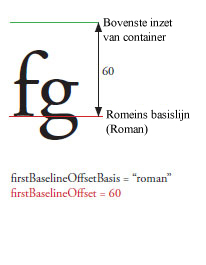
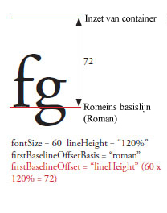
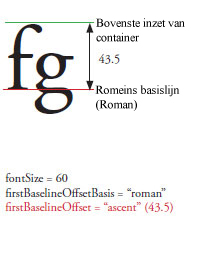

| Pakket | fl.text |
| Klasse | public class TLFTextField |
| Overerving | TLFTextField |
| Taalversie: | ActionScript 3.0 |
| Productversie: | Flash CS5 |
| Runtimeversies: | Flash Player 10, AIR 1.5 |
Maak een TLFTextField-object op dezelfde manier als wanneer u met de TextField-klasse een tekstveld maakt. Gebruik de textFlow-eigenschap om geavanceerde opmaak van de TLF-klassen toe te wijzen. Bijvoorbeeld:
import fl.text.TLFTextField; import flashx.textLayout.formats.TextLayoutFormat; import flashx.textLayout.elements.TextFlow; var myTLFTextField:TLFTextField = new TLFTextField(); addChild(myTLFTextField); myTLFTextField.x = 10; myTLFTextField.y = 10; myTLFTextField.width = 200 myTLFTextField.height = 100; myTLFTextField.text = "This is my text"; var myFormat:TextLayoutFormat = new TextLayoutFormat(); myFormat.textIndent = 8; myFormat.color = 0x336633; myFormat.fontFamily = "Arial, Helvetica, _sans"; myFormat.fontSize = 24; var myTextFlow:TextFlow = myTLFTextField.textFlow; myTextFlow.hostFormat = myFormat; myTextFlow.flowComposer.updateAllControllers();
Verwante API-elementen
 Overerfde openbare eigenschappen verbergen
Overerfde openbare eigenschappen verbergen Overerfde openbare eigenschappen weergeven
Overerfde openbare eigenschappen weergeven| Eigenschap | Gedefinieerd door | ||
|---|---|---|---|
 | accessibilityImplementation : AccessibilityImplementation
De huidige toegankelijkheidsimplementatie (AccessibilityImplementation) voor deze InteractiveObject-instantie. | InteractiveObject | |
| accessibilityProperties : AccessibilityProperties
De huidige toegankelijkheidsopties voor dit weergaveobject. | DisplayObject | |
| alpha : Number
Geeft de alpha-transparantiewaarde van het opgegeven object aan. | DisplayObject | |
| alwaysShowSelection : Boolean
Wanneer ingesteld op true en het tekstveld geen focus heeft, maakt Flash Player de selectie in het tekstveld lichtblauw. | TLFTextField | ||
| antiAliasType : String
Het type antialiasing dat wordt gebruikt voor dit tekstveld. | TLFTextField | ||
| autoSize : String
Bepaalt de automatische aanpassing van grootte en uitlijning van tekstvelden. | TLFTextField | ||
| background : Boolean
Geeft op of het tekstveld een opvulkleur voor de achtergrond heeft. | TLFTextField | ||
| backgroundAlpha : Number
Geeft de alfawaarde van de tekstveldachtergrond aan. | TLFTextField | ||
| backgroundColor : uint
Geeft de kleur van de tekstveldachtergrond aan. | TLFTextField | ||
| blendMode : String
Een waarde uit de klasse BlendMode die opgeeft welke overvloeimodus moet worden gebruikt. | DisplayObject | |
| blendShader : Shader [alleen-schrijven]
Stelt de arcering in die moet worden gebruikt om voor- en achtergrond in elkaar te laten overvloeien. | DisplayObject | |
| blockProgression : Object
Geeft een verticale of horizontale voortgang van lijnplaatsing aan. | TLFTextField | ||
| border : Boolean
Geeft op of het tekstveld een rand heeft. | TLFTextField | ||
| borderAlpha : Number
Geeft de alfawaarde van de rand aan. | TLFTextField | ||
| borderColor : uint
Geeft de kleur van de tekstveldrand aan. | TLFTextField | ||
| borderWidth : Number
Geeft de breedte van de rand aan. | TLFTextField | ||
| bottomScrollV : int [alleen-lezen]
Een geheel getal (een op 1 gebaseerde index) dat aangeeft welke regel als onderste regel wordt weergegeven in het opgegeven tekstveld. | TLFTextField | ||
| buttonMode : Boolean
Geeft de knopmodus van deze sprite op. | Sprite | |
| cacheAsBitmap : Boolean
Indien ingesteld op true, plaatsen Flash-runtimes een interne bitmaprepresentatie van het weergaveobject in cache. | DisplayObject | |
| cacheAsBitmapMatrix : Matrix
Als dit Matrix-object niet null is, definieert het hoe een weergaveobject wordt gerenderd als cacheAsBitmap wordt ingesteld op true. | DisplayObject | |
| caretIndex : int [alleen-lezen]
De index van de positie van het invoegpunt (invoegteken). | TLFTextField | ||
| columnCount : Object
Het aantal tekstkolommen (neemt de standaardwaarde over als deze tijdens de trapsgewijze opmaak niet is gedefinieerd). | TLFTextField | ||
| columnGap : Object
Geeft de waarde van de tussenruimte tussen de kolommen in pixels op (neemt de standaardwaarde over als deze tijdens de trapsgewijze opmaak niet gedefinieerd is). | TLFTextField | ||
| columnWidth : Object
Kolombreedte in pixels (neemt de standaardwaarde over als deze tijdens de trapsgewijze opmaak niet gedefinieerd is). | TLFTextField | ||
| condenseWhite : Boolean
Een booleaanse waarde die aangeeft of extra witruimte (spaties, regeleinden, enzovoort) in een tekstveld met HTML-tekst, of TLF-opmaakcode, wordt verwijderd. | TLFTextField | ||
| constructor : Object
Verwijzing naar het klasseobject of de constructorfunctie van een bepaalde objectinstantie. | Object | |
| contextMenu : NativeMenu
Geeft het contextmenu op dat is gekoppeld aan dit object. | InteractiveObject | |
| defaultTextFormat : flash.text:TextFormat
Geeft de opmaak op die op nieuw ingevoegde tekst wordt toegepast, zoals tekst die door de gebruiker is ingevoerd of tekst die met de methode replaceSelectedText() is ingevoegd. | TLFTextField | ||
| direction : String
Geeft het standaardinsluitingsniveau in twee richtingen van de tekst in het tekstblok aan. | TLFTextField | ||
| displayAsPassword : Boolean
Geeft aan of het tekstveld een tekstveld voor wachtwoorden is. | TLFTextField | ||
| doubleClickEnabled : Boolean
Geeft op of dit object gebeurtenissen doubleClick ontvangt. | InteractiveObject | |
| dropTarget : DisplayObject [alleen-lezen]
Geeft het weergaveobject op waarover de sprite wordt gesleept of waarop de sprite is neergezet. | Sprite | |
| embedFonts : Boolean
Geeft op of moet worden gerenderd met ingesloten lettertypecontouren. | TLFTextField | ||
| filters : Array
Een geïndexeerde array die elk filterobject bevat dat momenteel is gekoppeld aan het weergaveobject. | DisplayObject | |
| firstBaselineOffset : Object
Geeft de basislijnpositie van de eerste regel in de container aan. | TLFTextField | ||
| focusRect : Object
Geeft op of dit object een focusrechthoek weergeeft. | InteractiveObject | |
| graphics : Graphics [alleen-lezen]
Geeft het object Graphics op dat bij deze sprite hoort, waarbij vectortekenopdrachten kunnen optreden. | Sprite | |
| gridFitType : String
Het type rasteraanpassing dat wordt gebruikt voor dit tekstveld | TLFTextField | ||
| height : Number
Geeft de hoogte van het weergaveobject aan, in pixels. | DisplayObject | |
| hitArea : Sprite
Wijst een andere sprite aan als raakgebied voor een sprite. | Sprite | |
| htmlText : String
Bevat de HTML-representatie van de inhoud van het tekstveld. | TLFTextField | ||
| length : int [alleen-lezen]
Het aantal tekens in een tekstveld. | TLFTextField | ||
| loaderInfo : LoaderInfo [alleen-lezen]
Retourneert een object LoaderInfo dat informatie bevat over het laden van het bestand waartoe dit weergaveobject behoort. | DisplayObject | |
| mask : DisplayObject
Het aanroepende weergaveobject wordt gemaskeerd door het opgegeven object mask. | DisplayObject | |
| maxChars : int
Het maximum aantal tekens dat het tekstveld kan bevatten (ingevoerd door de gebruiker). | TLFTextField | ||
| maxScrollH : int [alleen-lezen]
De maximumwaarde van scrollH. | TLFTextField | ||
| maxScrollV : int [alleen-lezen]
De maximumwaarde van scrollV. | TLFTextField | ||
| metaData : Object
Krijgt het metagegevensobject van de DisplayObject-instantie als de metagegevens zijn opgeslagen naast de instantie van dit DisplayObject in het SWF-bestand door een PlaceObject4-markering. | DisplayObject | |
| mouseChildren : Boolean
Bepaalt of de onderliggende elementen van het object door de muis of door een gebruikersinvoerapparaat worden ingeschakeld. | DisplayObjectContainer | |
| mouseEnabled : Boolean
Geeft aan of dit object berichten van de muis of gebruikersinvoer ontvangt. | InteractiveObject | |
| mouseWheelEnabled : Boolean
Een booleaanse waarde die aangeeft of Flash Player automatisch door tekstvelden met meerdere regels schuift wanneer de gebruiker op een tekstveld klikt en het muiswiel gebruikt. | TLFTextField | ||
| mouseX : Number [alleen-lezen]
Geeft de x-coördinaat van de apparaatpositie van de muis of de gebruikersinvoer aan in pixels. | DisplayObject | |
| mouseY : Number [alleen-lezen]
Geeft de y-coördinaat van de apparaatpositie van de muis of de gebruikersinvoer aan in pixels. | DisplayObject | |
| multiline : Boolean
Geeft aan of het tekstveld een tekstveld met meerdere regels is. | TLFTextField | ||
| name : String
Geeft de instantienaam van het DisplayObject aan. | DisplayObject | |
| needsSoftKeyboard : Boolean
Geeft aan of een virtueel toetsenbord (een softwaretoetsenbord op het scherm) moet worden weergegeven wanneer deze InteractiveObject-instantie focus krijgt. | InteractiveObject | |
| numChildren : int [alleen-lezen]
Retourneert het aantal onderliggende objecten van dit object. | DisplayObjectContainer | |
| numLines : int [alleen-lezen]
Definieert het aantal tekstregels in een tekstveld met meerdere regels. | TLFTextField | ||
| opaqueBackground : Object
Geeft op of het weergaveobject dekkend is met een bepaalde achtergrondkleur. | DisplayObject | |
| paddingBottom : Object
Onderste inzet in pixels (neemt de standaardwaarde over als deze tijdens de trapsgewijze opmaak niet gedefinieerd is). | TLFTextField | ||
| paddingLeft : Object
Inzet links in pixels (neemt de standaardwaarde over als deze tijdens de trapsgewijze opmaak niet gedefinieerd is). | TLFTextField | ||
| paddingRight : Object
Inzet rechts in pixels (neemt de standaardwaarde over als deze tijdens de trapsgewijze opmaak niet gedefinieerd is). | TLFTextField | ||
| paddingTop : Object
Bovenste inzet in pixels (neemt de standaardwaarde over als deze tijdens de trapsgewijze opmaak niet gedefinieerd is). | TLFTextField | ||
| parent : DisplayObjectContainer [alleen-lezen]
Geeft het object DisplayObjectContainer aan dat dit weergaveobject bevat. | DisplayObject | |
| pixelMaxScrollV : int [alleen-lezen]
De maximumwaarde van pixelScrollV. | TLFTextField | ||
| pixelScrollV : int
De verticale positie van tekst in een tekstveld in pixels, anders dan de eigenschap scrollV, die is gebaseerd op regels. | TLFTextField | ||
| restrict : String
Geeft de set tekens aan die een gebruiker in het tekstveld kan invoeren. | TLFTextField | ||
| root : DisplayObject [alleen-lezen]
Voor een weergaveobject in een geladen SWF-bestand is de eigenschap root het bovenste weergaveobject in het gedeelte van de boomstructuur van het weergaveoverzicht dat wordt vertegenwoordigd door dat SWF-bestand. | DisplayObject | |
| rotation : Number
Geeft de rotatie van de instantie DisplayObject vanaf de oorspronkelijke oriëntatie (in graden) aan. | DisplayObject | |
| rotationX : Number
Geeft in graden de X-asrotatie van de DisplayObject-instantie aan ten opzichte van de 3D parent-container. | DisplayObject | |
| rotationY : Number
Geeft in graden de y-asrotatie van de DisplayObject-instantie aan ten opzichte van de 3D parent-container. | DisplayObject | |
| rotationZ : Number
Geeft in graden de z-asrotatie van de DisplayObject-instantie aan ten opzichte van de 3D parent-container. | DisplayObject | |
| scale9Grid : Rectangle
Het huidige schaalraster dat wordt gebruikt. | DisplayObject | |
| scaleX : Number
Bepaalt de horizontale schaal (percentage) van het object zoals deze wordt toegepast vanuit het registratiepunt. | DisplayObject | |
| scaleY : Number
Bepaalt de verticale schaal (percentage) van een object zoals deze wordt toegepast vanuit het registratiepunt van het object. | DisplayObject | |
| scaleZ : Number
Bepaalt de diepteschaal (percentage) van een object zoals deze wordt toegepast vanuit het registratiepunt van het object. | DisplayObject | |
| scrollH : int
De huidige horizontale schuifpositie. | TLFTextField | ||
| scrollRect : Rectangle
De verschuivende rechthoekgrenzen van het weergaveobject. | DisplayObject | |
| scrollV : int
De verticale positie van tekst in een tekstveld. | TLFTextField | ||
| selectable : Boolean
Een booleaanse waarde die aangeeft of het tekstveld kan worden geselecteerd. | TLFTextField | ||
| selectionBeginIndex : int [alleen-lezen]
De op nul gebaseerde indexwaarde van het eerste teken in de huidige selectie. | TLFTextField | ||
| selectionEndIndex : int [alleen-lezen]
De op nul gebaseerde indexwaarde van het laatste teken in de huidige selectie. | TLFTextField | ||
| sharpness : Number
Scherpte is niet van toepassing op TLF TextFields. | TLFTextField | ||
| softKeyboard : String
Bepaalt het uiterlijk van het schermtoetsenbord. | InteractiveObject | |
| softKeyboardInputAreaOfInterest : Rectangle
Definieert het gebied dat als scherm moet blijven fungeren wanneer een softwaretoetsenbord wordt weergegeven (niet beschikbaar op iOS). | InteractiveObject | |
| soundTransform : flash.media:SoundTransform
Beheert geluid binnen deze sprite. | Sprite | |
| stage : Stage [alleen-lezen]
Het werkgebied van het weergaveobject. | DisplayObject | |
| styleSheet : StyleSheet
Opmaakmodellen voor het TLF TextField. | TLFTextField | ||
| tabChildren : Boolean
Bepaalt of de onderliggende objecten van het object tabnavigatie hebben. | DisplayObjectContainer | |
| tabEnabled : Boolean
Geeft op of dit object in de tabvolgorde is opgenomen. | InteractiveObject | |
| tabIndex : int
Geeft de tabvolgorde van objecten in een SWF-bestand op. | InteractiveObject | |
| text : String
Een tekenreeks die de huidige tekst in het tekstveld is. | TLFTextField | ||
| textColor : uint
De kleur van de tekst in een tekstveld, in hexadecimale notatie. | TLFTextField | ||
| textFlow : flashx.textLayout.elements:TextFlow
Gebruik deze eigenschap om opmaak toe te wijzen vanaf de TLF-klassen in de flashx-pakketten aan de TLFTextField-instantie. | TLFTextField | ||
| textHeight : Number [alleen-lezen]
De hoogte van de tekst in pixels. | TLFTextField | ||
| textSnapshot : flash.text:TextSnapshot [alleen-lezen]
Retourneert een object TextSnapshot voor deze instantie DisplayObjectContainer. | DisplayObjectContainer | |
| textWidth : Number [alleen-lezen]
De breedte van de tekst in pixels. | TLFTextField | ||
| thickness : Number
De eigenschap Dikte is niet van toepassing op het TLF TextField. | TLFTextField | ||
| tlfMarkup : String
Stelt de TLF-opmaakcode van de tekst in of haalt deze op in het TLF-tekstveld. | TLFTextField | ||
| transform : flash.geom:Transform
Een object met eigenschappen die betrekking hebben op de matrix van een weergaveobject, de kleurtransformatie en de pixelbeperkingen. | DisplayObject | |
| type : String
Het type tekstveld. | TLFTextField | ||
| useHandCursor : Boolean
Een Booleaanse waarde die aangeeft of het wijzende handje wordt weergegeven wanneer de cursor wordt bewogen over een sprite waarin de eigenschap buttonMode is ingesteld op true. | Sprite | |
| useRichTextClipboard : Boolean
Geeft aan of behalve de tekst ook de opmaak ervan naar het klembord wordt gekopieerd. | TLFTextField | ||
| verticalAlign : String
Verticale uitlijning of uitvulling (neemt de standaardwaarde over als deze tijdens de trapsgewijze opmaak niet gedefinieerd is). | TLFTextField | ||
| visible : Boolean
Bepaalt of het weergaveobject zichtbaar is. | DisplayObject | |
| width : Number
Geeft de breedte van het weergaveobject aan, in pixels. | DisplayObject | |
| wordWrap : Boolean
Een booleaanse waarde die aangeeft of voor het tekstveld tekstomloop is ingesteld. | TLFTextField | ||
| x : Number
Bepaalt de x-coördinaat van de instantie DisplayObject ten opzichte van de lokale coördinaten van de bovenliggende DisplayObjectContainer. | DisplayObject | |
| y : Number
Bepaalt de y-coördinaat van de instantie DisplayObject ten opzichte van de lokale coördinaten van de bovenliggende DisplayObjectContainer. | DisplayObject | |
| z : Number
Geeft de z-coördinaatpositie langs de z-as van de DisplayObject-instantie aan ten opzichte van de bovenliggende 3D-container. | DisplayObject | |
| Methode | Gedefinieerd door | ||
|---|---|---|---|
Constructor voor TLFTextField-objecten. | TLFTextField | ||
|
Voegt een onderliggende instantie DisplayObject toe aan deze instantie DisplayObjectContainer. | DisplayObjectContainer | |
|
Voegt een onderliggende instantie DisplayObject toe aan deze instantie DisplayObjectContainer. | DisplayObjectContainer | |
| addEventListener(type:String, listener:Function, useCapture:Boolean = false, priority:int = 0, useWeakReference:Boolean = false):void
Registreert een gebeurtenislistenerobject bij een object EventDispatcher, zodat de listener een melding van een gebeurtenis ontvangt. | EventDispatcher | |
Voegt de tekenreeks die is opgegeven met de parameter newText toe aan het einde van de tekst in het tekstveld. | TLFTextField | ||
|
Geeft aan of vanwege beveiligingsbeperkingen weergaveobjecten worden weggelaten uit de lijst die wordt geretourneerd wanneer de methode DisplayObjectContainer.getObjectsUnderPoint() wordt aangeroepen met het opgegeven punt. | DisplayObjectContainer | |
|
Bepaalt of het opgegeven weergaveobject een onderliggend object van de instantie DisplayObjectContainer of de instantie zelf is. | DisplayObjectContainer | |
|
Verzendt een gebeurtenis naar de gebeurtenisstroom. | EventDispatcher | |
|
Retourneert een rechthoek die het gebied van het weergaveobject aangeeft ten opzichte van het coördinatensysteem van het object targetCoordinateSpace. | DisplayObject | |
Retourneert een rechthoek die het selectiekader van het teken vormt. | TLFTextField | ||
Retourneert de op nul gebaseerde indexwaarde van het teken op het punt dat is opgegeven met de parameters x en y. | TLFTextField | ||
|
Retourneert de onderliggende weergaveobjectinstantie bij de opgegeven index. | DisplayObjectContainer | |
|
Retourneert de onderliggende weergaveobjectinstantie met de opgegeven naam. | DisplayObjectContainer | |
|
Retourneert de indexpositie van een onderliggende instantie DisplayObject. | DisplayObjectContainer | |
Op basis van een tekenindex wordt hiermee de index van het eerste teken in dezelfde alinea geretourneerd. | TLFTextField | ||
Retourneert een DisplayObject-verwijzing voor de opgegeven id voor een afbeeldings- of SWF-bestand dat is toegevoegd aan een tekstveld met HTML-opmaak met de tag <img>. | TLFTextField | ||
Retourneert de op nul gebaseerde indexwaarde van de regel op het punt dat is opgegeven met de parameters x en y. | TLFTextField | ||
Retourneert de op nul gebaseerde indexwaarde van de regel die het teken bevat dat door de parameter charIndex wordt opgegeven. | TLFTextField | ||
Retourneert het aantal tekens in een opgegeven tekstregel. | TLFTextField | ||
Geeft metrische informatie over een bepaalde tekstregel weer. | TLFTextField | ||
Retourneert de tekenindex van het eerste teken op de regel die wordt opgegeven door de parameter lineIndex. | TLFTextField | ||
Retourneert de tekst van de regel die wordt opgegeven door de parameter lineIndex. | TLFTextField | ||
|
Retourneert een array met objecten die zich onder het opgegeven punt bevinden en onderliggende objecten van deze instantie DisplayObjectContainer zijn (of onderliggende objecten van onderliggende objecten van die instantie). | DisplayObjectContainer | |
Op basis van een tekenindex wordt hiermee de lengte van de alinea met het opgegeven teken geretourneerd. | TLFTextField | ||
|
Retourneert een rechthoek die de grens van het weergaveobject aangeeft op basis van het coördinatensysteem dat wordt gedefinieerd door de paramater targetCoordinateSpace, minus enige streken op vormen. | DisplayObject | |
Retourneert een object TextFormat met opmaakgegevens voor de tekst die is opgegeven met de parameters beginIndex en endIndex. | TLFTextField | ||
|
Hiermee worden de (algemene) werkgebiedcoördinaten van het object point omgezet in (lokale) objectcoördinaten. | DisplayObject | |
|
Converteert een tweedimensionaal punt van de (algemene) werkruimtecoördinaten naar (lokale) coördinaten van een driedimensionaal weergaveobject. | DisplayObject | |
|
Controleert of het object EventDispatcher listeners heeft geregistreerd voor een specifiek type gebeurtenis. | EventDispatcher | |
|
Geeft aan of voor een object een opgegeven eigenschap is gedefinieerd. | Object | |
|
Evalueert het selectiekader van het weergaveobject om te zien of dit het selectiekader van het weergaveobject obj overlapt of snijdt. | DisplayObject | |
|
Hiermee wordt het weergaveobject geëvalueerd om te zien of deze een punt dat is opgegeven door de parameters x en y, overlapt of doorsnijdt. | DisplayObject | |
Hiermee wordt true geretourneerd als een ingesloten lettertype beschikbaar is met de opgegeven fontName en fontStyle waarbij Font.fontType flash.text.FontType.EMBEDDED_CFF is. | TLFTextField | ||
|
Geeft aan of een instantie van de klasse Object zich in de prototypeketen van het object bevindt dat als parameter is opgegeven. | Object | |
|
Converteert een driedimensionaal punt van de (lokale) coördinaten van het driedimensionale weergaveobject naar een tweedimensionaal punt in de (algemene) werkruimtecoördinaten. | DisplayObject | |
|
Hiermee worden de (lokale) weergaveobjectcoördinaten van het object point omgezet in (algemene) werkgebiedcoördinaten. | DisplayObject | |
|
Geeft aan of de opgegeven eigenschap bestaat en kan worden opgesomd. | Object | |
|
Verwijdert de opgegeven onderliggende instantie DisplayObject uit de lijst met onderliggende objecten van de instantie DisplayObjectContainer. | DisplayObjectContainer | |
|
Verwijdert een onderliggend DisplayObject uit de opgegeven indexpositie in de lijst met onderliggende objecten van de DisplayObjectContainer. | DisplayObjectContainer | |
|
Verwijdert alle onderliggende DisplayObject-instanties uit de lijst met onderliggende objecten van de instantie DisplayObjectContainer. | DisplayObjectContainer | |
|
Verwijdert een listener uit het object EventDispatcher. | EventDispatcher | |
Hiermee wordt de huidige selectie door de inhoud van de parameter value vervangen. | TLFTextField | ||
Vervangt de met de parameters beginIndex en endIndex opgegeven tekenreeks door de inhoud van de parameter newText. | TLFTextField | ||
|
Geeft een virtueel toetsenbord weer. | InteractiveObject | |
|
Wijzigt de positie van een bestaand onderliggend object in de weergaveobjectcontainer. | DisplayObjectContainer | |
|
Stelt de beschikbaarheid van een dynamische eigenschap voor lusbewerkingen in. | Object | |
Stelt de tekst als geselecteerd in die wordt bepaald door de indexwaarden van het eerste en laatste teken, opgegeven door de parameters beginIndex en endIndex. | TLFTextField | ||
Past de tekstopmaak die is opgegeven met de parameter format toe op de opgegeven tekst in een tekstveld. | TLFTextField | ||
|
Hiermee kan de gebruiker de opgegeven sprite slepen. | Sprite | |
|
Hiermee kan de gebruiker de opgegeven sprite naar een apparaat met aanraakbediening slepen. | Sprite | |
|
Stopt recursief de tijdlijnuitvoering van alle filmclips die beginnen bij dit object. | DisplayObjectContainer | |
|
Beëindigt de methode startDrag(). | Sprite | |
|
Beëindigt de startTouchDrag()-methode, voor gebruik met apparaten met aanraakbediening. | Sprite | |
|
Wisselt de z-volgorde (van voor naar achter) van de twee opgegeven onderliggende objecten om. | DisplayObjectContainer | |
|
Wisselt de z-volgorde (van voor naar achter) van de onderliggende objecten op de twee opgegeven indexposities in de lijst met onderliggende objecten om. | DisplayObjectContainer | |
|
Geeft de tekenreeksweergave van dit object weer, geformatteerd volgens de locatiespecifieke conventies. | Object | |
|
Retourneert een tekenreeksrepresentatie van het opgegeven object. | Object | |
|
Retourneert de primitieve waarde van het opgegeven object. | Object | |
|
Controleert of een gebeurtenislistener is geregistreerd bij dit object EventDispatcher of een van de voorouders voor het opgegeven type gebeurtenis. | EventDispatcher | |
| Gebeurtenis | Overzicht | Gedefinieerd door | ||
|---|---|---|---|---|
| [uitgezonden gebeurtenis] Wordt verzonden wanneer Flash Player of de AIR-toepassing de besturingssysteemfocus krijgt en actief wordt. | EventDispatcher | ||
| Wordt verzonden wanneer een weergaveobject aan het weergaveoverzicht wordt toegevoegd. | DisplayObject | ||
| Wordt verzonden wanneer een weergaveobject direct of via toevoeging van een subboomstructuur die het weergaveobject bevat, aan het weergaveoverzicht van het werkgebied wordt toegevoegd. | DisplayObject | ||
| Wordt verzonden nadat een besturingswaarde is gewijzigd, in tegenstelling tot de gebeurtenis textInput, die wordt verzonden voordat de waarde wordt gewijzigd. | TLFTextField | |||
| Wordt verzonden wanneer de gebruiker Wissen of Verwijderen kiest in het snelmenu. | InteractiveObject | ||
| Wordt verzonden wanneer een gebruiker op de hoofdknop van het aanwijsapparaat drukt en deze boven hetzelfde InteractiveObject loslaat. | InteractiveObject | ||
| Wordt verzonden wanneer een handeling van de gebruiker het snelmenu opent dat aan dit interactieve object in een AIR-toepassing is gekoppeld. | InteractiveObject | ||
| Wordt verzonden wanneer de gebruiker de platformspecifieke toetsencombinatie voor een kopieerbewerking gebruikt of Kopiëren kiest in het contextmenu. | InteractiveObject | ||
| Wordt verzonden wanneer de gebruiker de platformspecifieke toetsencombinatie voor een knipbewerking gebruikt of Knippen kiest in het contextmenu. | InteractiveObject | ||
| [uitgezonden gebeurtenis] Wordt verzonden wanneer Flash Player of de AIR-toepassing de systeemfocus verliest en inactief wordt. | EventDispatcher | ||
| Wordt verzonden wanneer de gebruiker tweemaal snel achtereen op de hoofdknop van een aanwijsapparaat drukt en deze boven hetzelfde InteractiveObject loslaat wanneer de markering doubleClickEnabled van dit object op true is ingesteld. | InteractiveObject | ||
| [uitzendgebeurtenis] Wordt verzonden wanneer de afspeelkop een nieuw frame ingaat. | DisplayObject | ||
| [uitzendgebeurtenis] Wordt verzonden wanneer de afspeelkop het huidige frame verlaat. | DisplayObject | ||
| Wordt verzonden nadat een weergaveobject focus heeft gekregen. | InteractiveObject | ||
| Wordt verzonden nadat een weergaveobject focus heeft verloren. | InteractiveObject | ||
| [uitzendgebeurtenis] Wordt verzonden nadat de constructors van frameweergaveobjecten zijn uitgevoerd, maar voordat framescripts zijn uitgevoerd. | DisplayObject | ||
| Wordt verzonden wanneer de gebruiker een aanraakpunt langs de rand van het touchoppervlak maakt met een InteractiveObject-instantie (zoals wanneer u langs de rand van het touchoppervlak op Siri Extern voor Apple TV tikt). Sommige apparaten interpreteren dit contact misschien ook als een combinatie van verschillende aanraakgebeurtenissen. | InteractiveObject | ||
| Wordt verzonden wanneer de gebruiker op twee aanraakpunten drukt op dezelfde InteractiveObject-instantie op een apparaat met aanraakbediening (zoals wanneer de gebruiker met twee vingers op een weergaveobject op een gsm of tablet met aanraakscherm drukt en vervolgens weer loslaat). | InteractiveObject | ||
| Wordt verzonden wanneer de gebruiker een aanraakpunt over de InteractiveObject-instantie beweegt op een apparaat met aanraakbediening (zoals wanneer de gebruiker een vinger van links naar rechts beweegt over een weergaveobject op een gsm of tablet met aanraakscherm). | InteractiveObject | ||
| Wordt verzonden wanneer de gebruiker een zoombeweging maakt op een aanraakpunt met een InteractiveObject-instantie (zoals wanneer de gebruiker een scherm aanraakt met twee vingers en deze vervolgens roteert over een weergaveobject op een gsm of tablet met een aanraakscherm). | InteractiveObject | ||
| Wordt verzonden wanneer de gebruiker een veegbeweging maakt op een aanraakpunt met een InteractiveObject-instantie (zoals wanneer de gebruiker een scherm aanraakt met drie vingers en deze vervolgens parallel beweegt over een weergaveobject op een gsm of tablet met een aanraakscherm). | InteractiveObject | ||
| Wordt verzonden wanneer de gebruiker een aanraakpunt maakt met een InteractiveObject-instantie en vervolgens op een apparaat met aanraakbediening drukt (zoals wanneer de gebruiker een paar vingers op een weergaveobject plaatst om een menu te openen en er met een vinger op drukt om een menu-item op een gsm of tablet met een aanraakscherm te selecteren). | InteractiveObject | ||
| Wordt verzonden wanneer de gebruiker een zoombeweging maakt op een aanraakpunt met een InteractiveObject-instantie (zoals wanneer de gebruiker een scherm aanraakt met twee vingers en deze vervolgens snel spreidt over een weergaveobject op een gsm of tablet met een aanraakscherm). | InteractiveObject | ||
| Deze gebeurtenis wordt verzonden naar elke clienttoepassing die inline-invoer met een IME ondersteunt. | InteractiveObject | ||
| Wordt verzonden wanneer de gebruiker op een toets drukt. | InteractiveObject | ||
| Wordt verzonden wanneer de gebruiker focus probeert te wijzigen met toetsenbordnavigatie. | InteractiveObject | ||
| Wordt verzonden wanneer de gebruiker een toets loslaat. | InteractiveObject | ||
| Wordt verzonden wanneer een gebruiker op een hyperlink in een HTML-tekstveld klikt waarbij de URL begint met 'event:'. | TLFTextField | |||
| Wordt verzonden wanneer een gebruiker op de middelste knop van het aanwijsapparaat drukt en deze boven hetzelfde InteractiveObject loslaat. | InteractiveObject | ||
| Wordt verzonden wanneer een gebruiker op de middelste aanwijsapparaatknop drukt over een instantie InteractiveObject. | InteractiveObject | ||
| Wordt verzonden wanneer een gebruiker de aanwijsapparaatknop over een instantie InteractiveObject beweegt. | InteractiveObject | ||
| Wordt verzonden wanneer een gebruiker op de aanwijsapparaatknop drukt over een instantie InteractiveObject. | InteractiveObject | ||
| Wordt verzonden wanneer de gebruiker focus probeert te wijzigen met een aanwijsapparaat. | InteractiveObject | ||
| Wordt verzonden wanneer de gebruiker het aanwijsapparaat verplaatst terwijl het zich boven een InteractiveObject bevindt. | InteractiveObject | ||
| Wordt verzonden wanneer de gebruiker een aanwijsapparaat van een instantie InteractiveObject af verplaatst. | InteractiveObject | ||
| Wordt verzonden wanneer de gebruiker een aanwijsapparaat over een instantie InteractiveObject beweegt. | InteractiveObject | ||
| Wordt verzonden wanneer een gebruiker de aanwijsapparaatknop over een instantie InteractiveObject beweegt. | InteractiveObject | ||
| Wordt verzonden wanneer een muiswiel over een instantie InteractiveObject wordt gedraaid. | InteractiveObject | ||
| Wordt verzonden door de sleepinitiator InteractiveObject wanneer de gebruiker de sleepbeweging onderbreekt. | InteractiveObject | ||
| Wordt verzonden door het doel InteractiveObject wanneer een gesleept object erop wordt neergezet en het neerzetten is geaccepteerd met een aanroep van DragManager.acceptDragDrop(). | InteractiveObject | ||
| Wordt verzonden door een InteractiveObject wanneer een sleepbeweging binnen de grens komt. | InteractiveObject | ||
| Wordt verzonden door een InteractiveObject wanneer een sleepbeweging buiten de grens komt. | InteractiveObject | ||
| Wordt continu verzonden door een InteractiveObject zolang een sleepbeweging binnen de grenzen blijft. | InteractiveObject | ||
| Wordt verzonden aan het begin van een sleepbewerking door het InteractiveObject dat in de aanroep DragManager.doDrag() is opgegeven als de sleepinitiator. | InteractiveObject | ||
| Wordt verzonden tijdens een sleepbewerking door het InteractiveObject dat in de aanroep DragManager.doDrag() is opgegeven als de sleepinitiator. | InteractiveObject | ||
| Wordt verzonden wanneer de gebruiker de platformspecifieke toetsencombinatie voor een plakbewerking gebruikt of Plakken kiest in het contextmenu. | InteractiveObject | ||
| Wordt verzonden wanneer de gebruiker een actieve stylus omlaag en binnen de detectiedrempel van het scherm plaatst. | InteractiveObject | ||
| Wordt verzonden wanneer de gebruiker een actieve stylus boven de detectiedrempel van het scherm tilt. | InteractiveObject | ||
| Wordt verzonden wanneer de gebruiker een actieve stylus boven het scherm plaatst en binnen de detectiedrempel blijft. | InteractiveObject | ||
| Wordt verzonden wanneer de gebruiker een actieve stylus bij dit InteractiveObject weghaalt, maar wel binnen de detectiedrempel van het scherm blijft. | InteractiveObject | ||
| Wordt verzonden wanneer de gebruiker een actieve stylus recht boven dit InteractiveObject plaatst en binnen de detectiedrempel van het scherm blijft. | InteractiveObject | ||
| Wordt verzonden wanneer de gebruiker een actieve stylus van dit InteractiveObject en eventuele onderliggende elementen weghaalt, maar wel binnen de detectiedrempel van het scherm blijft. | InteractiveObject | ||
| Wordt verzonden wanneer de gebruiker een actieve stylus van buiten de afstammelingenstructuur van het object in de weergavelijst (maar dicht genoeg bij het scherm om binnen de detectiedrempel te blijven) boven dit InteractiveObject plaatst. | InteractiveObject | ||
| Verzonden wanneer een gebruiker de knop op het aanwijsapparaat loslaat nadat hij de knop eerst boven een InteractiveObject-instantie heeft ingedrukt en het aanwijsapparaat vervolgens van deze instantie heeft verplaatst. | InteractiveObject | ||
| Wordt verzonden vlak voordat een weergaveobject uit het weergaveoverzicht wordt verwijderd. | DisplayObject | ||
| Wordt verzonden vlak voordat een weergaveobject uit het weergaveoverzicht wordt verwijderd. Dit kan rechtstreeks gebeuren of door de subboomstructuur te verwijderen die het weergaveobject bevat. | DisplayObject | ||
| [uitzendgebeurtenis] Wordt verzonden wanneer de weergavelijst op het punt staat te worden bijgewerkt en gerenderd. | DisplayObject | ||
| Wordt verzonden wanneer een gebruiker op de rechterknop van het aanwijsapparaat drukt en deze boven hetzelfde InteractiveObject loslaat. | InteractiveObject | ||
| Wordt verzonden wanneer een gebruiker op de aanwijsapparaatknop drukt over een instantie InteractiveObject. | InteractiveObject | ||
| Wordt verzonden wanneer een gebruiker de aanwijsapparaatknop over een instantie InteractiveObject beweegt. | InteractiveObject | ||
| Wordt verzonden wanneer de gebruiker een aanwijsapparaat van een instantie InteractiveObject af verplaatst. | InteractiveObject | ||
| Wordt verzonden wanneer de gebruiker een aanwijsapparaat over een instantie InteractiveObject beweegt. | InteractiveObject | ||
| Wordt verzonden door een object TextField nadat de gebruiker schuift. | TLFTextField | |||
| Wordt verzonden wanneer de gebruiker de platformspecifieke toetsencombinatie gebruikt voor de bewerking Alles selecteren of Alles selecteren kiest in het snelmenu. | InteractiveObject | ||
| Wordt meteen verzonden nadat het softwaretoetsenbord wordt weergegeven. | InteractiveObject | ||
| Wordt verzonden vlak voordat het softwaretoetsenbord wordt weergegeven. | InteractiveObject | ||
| Wordt meteen verzonden nadat het softwaretoetsenbord van het scherm is verdwenen. | InteractiveObject | ||
| Wordt verzonden wanneer de waarde van de markering tabChildren van het object wordt gewijzigd. | InteractiveObject | ||
| Wordt verzonden wanneer de markering tabEnabled van het object wordt gewijzigd. | InteractiveObject | ||
| Wordt verzonden wanneer de waarde van de eigenschap tabIndex van het object wordt gewijzigd. | InteractiveObject | ||
| Flash Player verzendt de gebeurtenis textInput wanneer een gebruiker een of meer tekens invoert. | TLFTextField | |||
| Wordt verzonden wanneer de gebruiker voor het eerst een apparaat met aanraakbediening aanraakt (zoals wanneer de gebruiker een gsm of tablet met aanraakscherm met een vinger aanraakt). | InteractiveObject | ||
| Wordt verzonden wanneer de gebruiker het contact met een apparaat met aanraakbediening verwijdert (zoals wanneer de gebruiker een vinger van een gsm of tablet met aanraakscherm tilt). | InteractiveObject | ||
| De gebeurtenis wordt continu verzonden, vanaf het moment dat de gebruiker het apparaat aanraakt, tot het moment dat de aanraking ophoudt. | InteractiveObject | ||
| Wordt verzonden wanneer de gebruiker het contactpunt over een InteractiveObject-instantie op een apparaat met aanraakbediening beweegt (zoals wanneer de gebruiker een vinger van een weergaveobject naar een ander weergaveobject op een gsm of tablet met aanraakscherm sleept). | InteractiveObject | ||
| Wordt verzonden wanneer de gebruiker het contactpunt over een InteractiveObject-instantie op een apparaat met aanraakbediening beweegt (zoals wanneer de gebruiker een vinger van een punt buiten een weergaveobject naar een punt op een weergaveobject op een gsm of tablet met aanraakscherm versleept). | InteractiveObject | ||
| Wordt verzonden wanneer de gebruiker het aanraakpunt bij een InteractiveObject-instantie vandaan verplaatst op een apparaat met aanraakfunctionaliteit (zoals wanneer de gebruiker een vinger van een punt boven het weergaveobject naar een punt buiten het object sleept op een mobiele telefoon of een tablet met een aanraakscherm). | InteractiveObject | ||
| Wordt verzonden wanneer de gebruiker het contactpunt over een InteractiveObject-instantie op een apparaat met aanraakbediening beweegt (zoals wanneer de gebruiker een vinger van een punt buiten een weergaveobject naar een punt op een weergaveobject op een gsm of tablet met aanraakscherm versleept). | InteractiveObject | ||
| Wordt verzonden wanneer de gebruiker het contactpunt op dezelfde InteractiveObject-instantie tilt waarop het contact op een apparaat met aanraakbediening was geïnitialiseerd (zoals wanneer de gebruiker een vinger op één punt van een weergaveobject drukt en vervolgens loslaat op een gsm of tablet met aanraakscherm). | InteractiveObject | ||
alwaysShowSelection | eigenschap |
alwaysShowSelection:Boolean| Taalversie: | ActionScript 3.0 |
| Runtimeversies: | Flash Player 10, AIR 1.5 |
Wanneer ingesteld op true en het tekstveld geen focus heeft, maakt Flash Player de selectie in het tekstveld lichtblauw. Wanneer ingesteld op false en het tekstveld geen focus heeft, wordt de selectie in het tekstveld niet gemarkeerd.
Voorbeeld:
package
{
import flash.display.Sprite;
import fl.text.TLFTextField;
import flash.text.TextFieldType;
public class TLFTextField_alwaysShowSelection extends Sprite
{
public function TLFTextField_alwaysShowSelection()
{
var label1:TLFTextField = createTLFTextField(0, 20, 200, 20);
label1.text = "This text is selected.";
label1.setSelection(0, 9);
label1.alwaysShowSelection = true;
var label2:TLFTextField = createTLFTextField(0, 50, 200, 20);
label2.text = "Drag to select some of this text.";
}
private function createTLFTextField(x:Number, y:Number, width:Number, height:Number):TLFTextField
{
var result:TLFTextField = new TLFTextField();
result.x = x;
result.y = y;
result.width = width;
result.height = height;
addChild(result);
return result;
}
}
}
De standaardwaarde is false.
Implementatie
public function get alwaysShowSelection():Boolean public function set alwaysShowSelection(value:Boolean):voidVerwante API-elementen
antiAliasType | eigenschap |
antiAliasType:String| Taalversie: | ActionScript 3.0 |
| Runtimeversies: | Flash Player 10, AIR 1.5 |
Het type antialiasing dat wordt gebruikt voor dit tekstveld. Gebruikt constanten flash.text.AntiAliasType voor deze eigenschap. U kunt deze instelling alleen beheren wanneer het lettertype is ingesloten (met de eigenschap embedFonts op true ingesteld).
Wanneer u waarden voor deze eigenschap wilt instellen, gebruikt u de volgende tekenreekswaarden:
| Tekenreekswaarde | Beschrijving |
|---|---|
flash.text.AntiAliasType.NORMAL | Normale antialiasing van tekst wordt toegepast. Dit is het type antialiasing dat in Flash Player 7 en lagere versies werd gebruikt. |
flash.text.AntiAliasType.ADVANCED | Geavanceerde antialiasing wordt toegepast, waardoor de tekst beter leesbaar wordt. (Dit kenmerk was voor het eerst beschikbaar in Flash Player 8.) Bij geavanceerde antialiasing kunnen kleine lettertypen met zeer hoge kwaliteit worden weergegeven. U kunt deze instelling het best gebruiken met toepassingen met een grote hoeveelheid kleine tekst. Geavanceerde antialiasing wordt niet aangeraden voor lettertypen groter dan 48 punten. |
De standaardwaarde is flash.text.AntiAliasType.NORMAL.
Implementatie
public function get antiAliasType():String public function set antiAliasType(value:String):voidVerwante API-elementen
autoSize | eigenschap |
autoSize:String| Taalversie: | ActionScript 3.0 |
| Runtimeversies: | Flash Player 10, AIR 1.5 |
Bepaalt de automatische aanpassing van grootte en uitlijning van tekstvelden. Acceptabele waarden voor de constanten TextFieldAutoSize zijn: TextFieldAutoSize.NONE (de standaardwaarde), TextFieldAutoSize.LEFT, TextFieldAutoSize.RIGHT enTextFieldAutoSize.CENTER.
Wanneer autoSize is ingesteld op TextFieldAutoSize.NONE (standaardwaarde), wordt de grootte niet gewijzigd.
Wanneer autoSize wordt ingesteld op TextFieldAutoSize.LEFT, wordt de tekst behandeld als links uitgevulde tekst. Dit betekent dat de linkermarge van het tekstveld een vaste positie heeft en dat een wijziging van de grootte van één regel van het tekstveld invloed heeft op de rechtermarge. Wanneer in het tekstveld een regeleinde is opgenomen (bijvoorbeeld '\n' of '\r'), wordt de grootte aan de onderkant ook gewijzigd zodat de volgende regel tekst past. Wanneer wordWrap ook is ingesteld op true, wordt alleen de grootte van de onderkant van het tekstveld aangepast en heeft de rechterzijde een vaste positie.
Wanneer autoSize wordt ingesteld op TextFieldAutoSize.RIGHT, wordt de tekst behandeld als rechts uitgevulde tekst. Dit betekent dat de rechtermarge van het tekstveld een vaste positie heeft en dat een wijziging van de grootte van één regel van het tekstveld invloed heeft op de linkermarge. Wanneer in het tekstveld een regeleinde is opgenomen (bijvoorbeeld '\n' of '\r'), wordt de grootte aan de onderkant ook gewijzigd zodat de volgende regel tekst past. Wanneer wordWrap ook is ingesteld op true, wordt alleen de grootte van de onderkant van het tekstveld aangepast en heeft de linkerzijde een vaste positie.
Wanneer autoSize is ingesteld op TextFieldAutoSize.CENTER, wordt de tekst behandeld als gecentreerd uitgevulde tekst. Dit betekent dat bij een aanpassing van de grootte van één regel van een tekstveld de linker- en rechtermarge in gelijke mate worden aangepast. Wanneer in het tekstveld een regeleinde is opgenomen (bijvoorbeeld '\n' of '\r'), wordt de grootte aan de onderkant ook gewijzigd zodat de volgende regel tekst past. Wanneer wordWrap ook is ingesteld op true, wordt alleen de grootte van de onderkant van het tekstveld aangepast en hebben de linker- en rechterzijde een vaste positie.
Implementatie
public function get autoSize():String public function set autoSize(value:String):voidGegenereerde uitzondering
ArgumentError — De opgegeven autoSize is geen lid van flash.text.TextFieldAutoSize.
|
Verwante API-elementen
background | eigenschap |
background:Boolean| Taalversie: | ActionScript 3.0 |
| Runtimeversies: | Flash Player 10, AIR 1.5 |
Geeft op of het tekstveld een opvulkleur voor de achtergrond heeft. Indien true, heeft het tekstveld een opvulkleur voor de achtergrond. Indien false, heeft het tekstveld geen opvulkleur voor de achtergrond. Gebruik de eigenschap backgroundColor om de achtergrondkleur van een tekstveld in te stellen.
De standaardwaarde is false.
Implementatie
public function get background():Boolean public function set background(value:Boolean):voidVerwante API-elementen
backgroundAlpha | eigenschap |
backgroundAlpha:Number| Taalversie: | ActionScript 3.0 |
| Runtimeversies: | Flash Player 10, AIR 1.5 |
Geeft de alfawaarde van de tekstveldachtergrond aan. De alfa van de achtergrond kan op elke waarde tussen 0(onzichtbaar) en 1 (effen) worden ingesteld. Deze eigenschap kan worden opgehaald of ingesteld, zelfs wanneer momenteel geen achtergrond is ingesteld, maar het alfa-effect is alleen zichtbaar wanneer voor het tekstveld de eigenschap background is ingesteld op true.
De standaardwaarde is 1.0.
Implementatie
public function get backgroundAlpha():Number public function set backgroundAlpha(value:Number):voidVerwante API-elementen
backgroundColor | eigenschap |
backgroundColor:uint| Taalversie: | ActionScript 3.0 |
| Runtimeversies: | Flash Player 10, AIR 1.5 |
Geeft de kleur van de tekstveldachtergrond aan. Deze eigenschap kan worden opgehaald of ingesteld, zelfs wanneer momenteel geen achtergrond is ingesteld, maar de kleur is alleen zichtbaar wanneer voor het tekstveld de eigenschap background is ingesteld op true.
De standaardwaarde is 0xFFFFFF (white).
Implementatie
public function get backgroundColor():uint public function set backgroundColor(value:uint):voidVerwante API-elementen
blockProgression | eigenschap |
blockProgression:Object| Taalversie: | ActionScript 3.0 |
| Productversie: | Flash CS5 |
| Runtimeversies: | Flash Player 10, AIR 1.5 |
Geeft een verticale of horizontale voortgang van lijnplaatsing aan. De regels worden van boven naar beneden geplaatst (BlockProgression.TB bij horizontale tekst) en van rechts naar links (BlockProgression.RL bij verticale tekst).
Geldige waarden zijn flashx.textLayout.formats.BlockProgression.RL, flashx.textLayout.formats.BlockProgression.TB, flashx.textLayout.formats.FormatValue.INHERIT.
Als de waarde niet is gedefinieerd tijdens de trapsgewijze opmaak, neemt deze eigenschap de waarde van een voorouder over. Als er voor deze eigenschap geen voorouder is ingesteld, heeft deze de waarde TB.
De standaardwaarde is undefined (indicates not set).
Implementatie
public function get blockProgression():Object public function set blockProgression(value:Object):voidVerwante API-elementen
border | eigenschap |
border:Boolean| Taalversie: | ActionScript 3.0 |
| Runtimeversies: | Flash Player 10, AIR 1.5 |
Geeft op of het tekstveld een rand heeft. Indien true, heeft het tekstveld een rand. Indien false, heeft het tekstveld geen rand. Gebruik de eigenschap borderColor om de randkleur in te stellen.
De standaardwaarde is false.
Implementatie
public function get border():Boolean public function set border(value:Boolean):voidVerwante API-elementen
borderAlpha | eigenschap |
borderAlpha:Number| Taalversie: | ActionScript 3.0 |
| Runtimeversies: | Flash Player 10, AIR 1.5 |
Geeft de alfawaarde van de rand aan. De alfa van de rand kan op elke waarde tussen 0(onzichtbaar) en 1 (effen) worden ingesteld. Deze eigenschap kan worden opgehaald of ingesteld, zelfs wanneer momenteel geen rand is ingesteld, maar het alfa-effect is alleen zichtbaar wanneer voor het tekstveld de eigenschap border is ingesteld op true.
De standaardwaarde is 1.0.
Implementatie
public function get borderAlpha():Number public function set borderAlpha(value:Number):voidVerwante API-elementen
borderColor | eigenschap |
borderColor:uint| Taalversie: | ActionScript 3.0 |
| Runtimeversies: | Flash Player 10, AIR 1.5 |
Geeft de kleur van de tekstveldrand aan. De standaardwaarde is 0x000000 (zwart). Deze eigenschap kan worden opgehaald of ingesteld, zelfs wanneer momenteel geen achtergrond is ingesteld, maar de kleur is alleen zichtbaar wanneer voor het tekstveld de eigenschap border is ingesteld op true.
Implementatie
public function get borderColor():uint public function set borderColor(value:uint):voidVerwante API-elementen
borderWidth | eigenschap |
borderWidth:Number| Taalversie: | ActionScript 3.0 |
| Runtimeversies: | Flash Player 10, AIR 1.5 |
Geeft de breedte van de rand aan. De breedte van de rand kan op elke waarde tussen 1 en 100 worden ingesteld. Deze eigenschap kan worden opgehaald of ingesteld, zelfs wanneer momenteel geen achtergrond is ingesteld, maar de breedte is alleen zichtbaar wanneer voor het tekstveld de eigenschap border is ingesteld op true.
Bij het berekenen van de breedte of hoogte van het tekstveld wordt er rekening gehouden met de breedte van de rand. Om de breedte of hoogte van de tekstcontainer zonder rand te berekenen, trekt u tweemaal de borderWidth van de breedte- of hoogtewaarde af.
Bijvoorbeeld, txtHeight = tlf.height - (2 tlf.borderwidth);.
De standaardwaarde is 1.
Implementatie
public function get borderWidth():Number public function set borderWidth(value:Number):voidVerwante API-elementen
bottomScrollV | eigenschap |
bottomScrollV:int [alleen-lezen] | Taalversie: | ActionScript 3.0 |
| Runtimeversies: | Flash Player 10, AIR 1.5 |
Een geheel getal (een op 1 gebaseerde index) dat aangeeft welke regel als onderste regel wordt weergegeven in het opgegeven tekstveld. U kunt een tekstveld zien als een venster met uitzicht op een (gedeelte van een) blok tekst. De scrollV-eigenschap is de op 1 gebaseerde index van de bovenste zichtbare regel in het venster en bottomScroll is de laatst zichtbare regel in het venster.
De tekst tussen de regels die worden aangegeven door scrollV en bottomScrollV wordt momenteel weergegeven in het tekstveld.
Implementatie
public function get bottomScrollV():intVerwante API-elementen
caretIndex | eigenschap |
caretIndex:int [alleen-lezen] | Taalversie: | ActionScript 3.0 |
| Runtimeversies: | Flash Player 10, AIR 1.5 |
De index van de positie van het invoegpunt (invoegteken). Wanneer geen invoegpunt wordt weergegeven, wordt als waarde de positie ingesteld die het invoegpunt inneemt als u de focus weer instelt op het veld (doorgaans de laatste positie van het invoegpunt of 0 als het veld nog geen focus heeft gehad).
Selectiebereikindexen zijn gebaseerd op nul (de eerste positie is bijvoorbeeld 0, de tweede positie 1, enzovoort).
Voorbeeld:
package
{
import flash.display.Sprite;
import flash.events.MouseEvent;
import fl.text.TLFTextField;
import flash.text.TextFieldType;
public class TLFTextField_caretIndex extends Sprite
{
public function TLFTextField_caretIndex()
{
var tlf:TLFTextField = createTLFTextField(10, 10, 100, 100);
tlf.wordWrap = true;
tlf.type = TextFieldType.INPUT;
tlf.text = "Click in this text field. Compare the difference between clicking without selecting versus clicking and selecting text.";
tlf.addEventListener(MouseEvent.CLICK, printCursorPosition);
}
private function printCursorPosition(event:MouseEvent):void
{
var tlf:TLFTextField = TLFTextField(event.currentTarget);
trace("caretIndex:", tlf.caretIndex);
trace("selectionBeginIndex:", tlf.selectionBeginIndex);
trace("selectionEndIndex:", tlf.selectionEndIndex);
}
private function createTLFTextField(x:Number, y:Number, width:Number, height:Number):TLFTextField
{
var result:TLFTextField = new TLFTextField();
result.x = x;
result.y = y;
result.width = width;
result.height = height;
addChild(result);
return result;
}
}
}
Implementatie
public function get caretIndex():intVerwante API-elementen
columnCount | eigenschap |
columnCount:Object| Taalversie: | ActionScript 3.0 |
| Runtimeversies: | Flash Player 10, AIR 1.5 |
Het aantal tekstkolommen (neemt de standaardwaarde over als deze tijdens de trapsgewijze opmaak niet is gedefinieerd). De waarde voor het aantal tekstkolommen overschrijft alle andere kolominstellingen. De waarde is een geheel getal of FormatValue.AUTO (indien niet opgegeven). Als columnCount niet is opgegeven, wordt columnWidth gebruikt om zoveel mogelijk kolommen te maken die in de container passen.
Geldige tekenreekswaarden zijn flashx.textLayout.formats.FormatValue.AUTO, flashx.textLayout.formats.FormatValue.INHERIT en ints van 1 tot 50.
Als deze eigenschap niet tijdens de trapsgewijze opmaak gedefinieerd is, heeft deze de waarde AUTO.
De standaardwaarde is undefined (indicates not set).
Implementatie
public function get columnCount():Object public function set columnCount(value:Object):voidVerwante API-elementen
columnGap | eigenschap |
columnGap:Object| Taalversie: | ActionScript 3.0 |
| Runtimeversies: | Flash Player 10, AIR 1.5 |
Geeft de waarde van de tussenruimte tussen de kolommen in pixels op (neemt de standaardwaarde over als deze tijdens de trapsgewijze opmaak niet gedefinieerd is).
Een geldige waarde is een getal tussen 0 en 1000 of flashx.textLayout.formats.FormatValue.INHERIT.
Als deze eigenschap niet tijdens de trapsgewijze opmaak gedefinieerd is, heeft deze de waarde 20.
De standaardwaarde is undefined (indicates not set).
Implementatie
public function get columnGap():Object public function set columnGap(value:Object):voidVerwante API-elementen
columnWidth | eigenschap |
columnWidth:Object| Taalversie: | ActionScript 3.0 |
| Productversie: | Flash CS5 |
| Runtimeversies: | Flash Player 10, AIR 1.5 |
Kolombreedte in pixels (neemt de standaardwaarde over als deze tijdens de trapsgewijze opmaak niet gedefinieerd is). Als u de kolombreedte opgeeft maar niet het aantal kolommen, maakt TextLayout zoveel mogelijk kolommen met de desbetreffende breedte. Hierbij wordt uitgegaan van de containerbreedte en de columnGap-instellingen. De resterende ruimte wordt na de laatste kolom ingevoegd. De waarde is een getal.
Geldige tekenreekswaarden zijn flashx.textLayout.formats.FormatValue.AUTO, flashx.textLayout.formats.FormatValue.INHERIT en getallen van 0 tot 8000.
Als deze eigenschap niet tijdens de trapsgewijze opmaak gedefinieerd is, heeft deze de waarde AUTO.
De standaardwaarde is undefined (indicates not set).
Implementatie
public function get columnWidth():Object public function set columnWidth(value:Object):voidVerwante API-elementen
condenseWhite | eigenschap |
condenseWhite:Boolean| Taalversie: | ActionScript 3.0 |
| Productversie: | Flash CS5 |
| Runtimeversies: | Flash Player 10, AIR 1.5 |
Een booleaanse waarde die aangeeft of extra witruimte (spaties, regeleinden, enzovoort) in een tekstveld met HTML-tekst, of TLF-opmaakcode, wordt verwijderd. De standaardwaarde is false. De eigenschap condenseWhite is uitsluitend van invloed op TLF-opmaakcode of tekst die is ingesteld met de eigenschap htmlText, niet met de eigenschap text. Wanneer u tekst instelt met de eigenschap text, wordt condenseWhite genegeerd.
Als condenseWhite is ingesteld op true, moet u standaard-HTML-tags zoals <br> en <p> gebruiken om regeleinden in het tekstveld op te nemen.
Stel de eigenschap condenseWhite in voordat u de eigenschap htmlText of de eigenschap tlfMarkup instelt.
In het volgende voorbeeld wordt aangegeven hoe u de eigenschap condenseWhite gebruikt om extra witruimte uit tlfMarkup-inhoud te verwijderen:
import fl.text.TLFTextField; var my_tlf:TLFTextField = new TLFTextField(); my_tlf.autoSize = 'left'; // This line removes white space from tlfMarkup my_tlf.condenseWhite = true; addChild(my_tlf); var my_markup:String = '<TextFlow xmlns="http://ns.adobe.com/textLayout/2008">' + ' <p>' + ' <span>Here is the first span.</span>' + ' \n' + ' <span>And here is the second span.</span>' + ' </p>' + '</TextFlow>'; my_tlf.tlfMarkup = my_markup;
De standaardwaarde is false.
Implementatie
public function get condenseWhite():Boolean public function set condenseWhite(value:Boolean):voidVerwante API-elementen
defaultTextFormat | eigenschap |
defaultTextFormat:flash.text:TextFormat| Taalversie: | ActionScript 3.0 |
| Productversie: | Flash CS5 |
| Runtimeversies: | Flash Player 10, AIR 1.5 |
Geeft de opmaak op die op nieuw ingevoegde tekst wordt toegepast, zoals tekst die door de gebruiker is ingevoerd of tekst die met de methode replaceSelectedText() is ingevoegd.
Implementatie
public function get defaultTextFormat():flash.text:TextFormat public function set defaultTextFormat(value:flash.text:TextFormat):voidVerwante API-elementen
direction | eigenschap |
direction:String| Taalversie: | ActionScript 3.0 |
| Productversie: | Flash CS5 |
| Runtimeversies: | Flash Player 10, AIR 1.5 |
Geeft het standaardinsluitingsniveau in twee richtingen van de tekst in het tekstblok aan. Bij een leesvolgorde van links naar rechts, zoals in talen die zijn gebaseerd op het Latijnse alfabet of bij een leesvolgorde van rechts naar links, zoals in het Arabisch of Hebreeuws. Deze eigenschap heeft ook invloed op de kolomrichting wanneer de eigenschap wordt toegepast op containerniveau. Kolommen zijn ook van links naar rechts (of van rechts naar links) georiënteerd, net als gewone tekst. Hieronder volgen enkele voorbeelden:

Geldige waarden zijn flashx.textLayout.formats.Direction.LTR, flashx.textLayout.formats.Direction.RTL, flashx.textLayout.formats.FormatValue.INHERIT.
Als de waarde niet is gedefinieerd tijdens de trapsgewijze opmaak, neemt deze eigenschap de waarde van een voorouder over. Als er voor deze eigenschap geen voorouder is ingesteld, heeft deze de waarde LTR.
De standaardwaarde is undefined (indicates not set).
Implementatie
public function get direction():String public function set direction(value:String):voidVerwante API-elementen
displayAsPassword | eigenschap |
displayAsPassword:Boolean| Taalversie: | ActionScript 3.0 |
| Productversie: | Flash CS5 |
| Runtimeversies: | Flash Player 10, AIR 1.5 |
Geeft aan of het tekstveld een tekstveld voor wachtwoorden is. Wanneer de waarde van deze eigenschap true is, wordt het tekstveld behandeld als een tekstveld voor wachtwoorden en worden de invoertekens weergegeven als sterretjes om de echte tekens te verbergen. Wanneer de waarde false is, wordt het tekstveld niet behandeld als een tekstveld voor wachtwoorden. Wanneer de wachtwoordmodus is ingeschakeld, werken de opdrachten Knippen en Kopiëren en de bijbehorende sneltoetsen niet. Met dit beveiligingsmechanisme wordt voorkomen dat een kwaadwillende gebruiker de sneltoetsen gebruikt om achter een wachtwoord te komen op een onbeheerde computer.
De standaardwaarde is false.
Implementatie
public function get displayAsPassword():Boolean public function set displayAsPassword(value:Boolean):voidembedFonts | eigenschap |
embedFonts:Boolean| Taalversie: | ActionScript 3.0 |
| Productversie: | Flash CS5 |
| Runtimeversies: | Flash Player 10, AIR 1.5 |
Geeft op of moet worden gerenderd met ingesloten lettertypecontouren. Indien false, rendert Flash Player het tekstveld met apparaatlettertypen.
Als u de eigenschap embedFonts op true instelt voor een tekstveld, moet u voor die tekst een lettertype opgeven met de eigenschap font van een object TextFormat dat is toegepast op het tekstveld. Als het opgegeven lettertype niet in het SWF-bestand is ingesloten, wordt de tekst in een reservelettertype weergegeven.
De standaardwaarde is false.
Implementatie
public function get embedFonts():Boolean public function set embedFonts(value:Boolean):voidVerwante API-elementen
firstBaselineOffset | eigenschap |
firstBaselineOffset:Object| Taalversie: | ActionScript 3.0 |
| Productversie: | Flash CS5 |
| Runtimeversies: | Flash Player 10, AIR 1.5 |
Geeft de basislijnpositie van de eerste regel in de container aan. Naar welke basislijn door deze eigenschap wordt verwezen is afhankelijk van de landinstellingswaarde op containerniveau. Voor Japans en Chinees geldt de waarde TextBaseline.IDEOGRAPHIC_BOTTOM; voor alle andere talen is het TextBaseline.ROMAN. De verschuiving van de bovenste inzet (of rechterinzet als blockProgression is ingesteld op RL) van de container naar de basislijn van de eerste regel kan de volgende waarden hebben: BaselineOffset.ASCENT (gelijk aan de stijging van de regel), BaselineOffset.LINE_HEIGHT (gelijk aan de hoogte van de eerste regel) of een vast getal om een absolute afstand aan te duiden. Met de waarde BaselineOffset.AUTO wordt de stijging van de regel uitgelijnd met de bovenste inzet van de container.

Geldige tekenreekswaarden zijn flashx.textLayout.formats.BaselineOffset.AUTO, flashx.textLayout.formats.BaselineOffset.ASCENT, flashx.textLayout.formats.BaselineOffset.LINE_HEIGHT, flashx.textLayout.formats.FormatValue.INHERIT en getallen van 0 tot 1000.
Als de waarde niet is gedefinieerd tijdens de trapsgewijze opmaak, neemt deze eigenschap de waarde van een voorouder over. Als er voor deze eigenschap geen voorouder is ingesteld, heeft deze de waarde AUTO.
De standaardwaarde is undefined (indicates not set).
Implementatie
public function get firstBaselineOffset():Object public function set firstBaselineOffset(value:Object):voidVerwante API-elementen
gridFitType | eigenschap |
gridFitType:String| Taalversie: | ActionScript 3.0 |
| Productversie: | Flash CS5 |
| Runtimeversies: | Flash Player 10, AIR 1.5 |
Het type rasteraanpassing dat wordt gebruikt voor dit tekstveld Deze eigenschap is alleen van toepassing wanneer de eigenschap flash.text.AntiAliasType van het tekstveld op flash.text.AntiAliasType.ADVANCED is ingesteld.
Het type rasteraanpassing dat wordt gebruikt, bepaalt of in Flash Player krachtige horizontale en verticale lijnen wel of niet passend worden gemaakt op een pixel- of subpixelraster.
U kunt de volgende tekenreekswaarden voor de eigenschap flash.text.GridFitType gebruiken:
| Tekenreekswaarde | Beschrijving |
|---|---|
flash.text.GridFitType.NONE | Passend op raster wordt niet toegepast. Horizontale en verticale lijnen in de glyphs worden niet gedwongen passend gemaakt op het pixelraster. Deze instelling wordt aanbevolen voor animaties en grote lettertypen. |
flash.text.GridFitType.PIXEL | Krachtige horizontale en verticale lijnen worden passend gemaakt op het pixelraster. Deze instelling werkt alleen voor tekstvelden met linkse uitlijning. Wanneer u deze instelling wilt gebruiken, moet de eigenschap flash.display.AntiAliasType van het tekstveld op flash.text.AntiAliasType.ADVANCED worden ingesteld. Deze instelling resulteert doorgaans in de beste leesbaarheid voor links uitgelijnde tekst. |
flash.text.GridFitType.SUBPIXEL | Krachtige horizontale en verticale lijnen worden passend gemaakt op het subpixelraster van een LCD-scherm. Wanneer u deze instelling wilt gebruiken, moet de eigenschap flash.text.AntiAliasType van het tekstveld op flash.text.AntiAliasType.ADVANCED worden ingesteld. De instelling flash.text.GridFitType.SUBPIXEL is meestal geschikt voor rechts uitgelijnde en gecentreerde dynamische tekst en kan helpen bij de keuze tussen animatie- en tekstkwaliteit. |
De standaardwaarde is flash.text.GridFitType.PIXEL.
Implementatie
public function get gridFitType():String public function set gridFitType(value:String):voidVerwante API-elementen
htmlText | eigenschap |
htmlText:String| Taalversie: | ActionScript 3.0 |
| Productversie: | Flash CS5 |
| Runtimeversies: | Flash Player 10, AIR 1.5 |
Bevat de HTML-representatie van de inhoud van het tekstveld.
TLFTextField-instanties ondersteunen de volgende HTML-tags:
| Tag | Beschrijving |
|---|---|
| Tag voor anker |
De tag <a> maakt een hyperlink en ondersteunt de volgende kenmerken:
|
| Tag voor vette tekst |
Met de tag <b> wordt tekst vet weergegeven. Er moet wel een vet lettertype beschikbaar zijn voor de weergave van de tekst.
|
| Tag voor regeleinde |
De tag <br> maakt een regeleinde in de tekst.
|
| Tag voor lettertype |
De tag <font> geeft een lettertype of lijst met lettertypen op voor weergave van de tekst. De tag font ondersteunt de volgende kenmerken:
|
| Tag voor afbeelding |
Met de tag <img> kunt u externe afbeeldingsbestanden (JPEG, GIF, PNG), SWF-bestanden en filmclips in tekst insluiten.
De tag
Opmerking: in tegenstelling tot de TextField-klasse, worden de volgende kenmerken niet ondersteund: |
| Tag voor cursieve tekst |
Met de tag <i> wordt de tekst tussen tags cursief weergegeven. Er moet wel een cursief lettertype beschikbaar zijn voor de weergave van de tekst.
|
| Tag voor lijstitem | Opmerking: in tegenstelling tot de TextField-klasse, wordt de tag voor lijstitem niet ondersteund. |
| Tag voor alinea |
De tag <p> voegt een nieuwe alinea in. De tag <p> ondersteunt de volgende kenmerken:
|
| Tag voor bereik |
De tag <span> ondersteunt de volgende kenmerken:
|
| Tag voor tekstopmaak |
Met de tag De tag
|
| Tag voor onderstreping |
Met de tag <u> wordt de tekst tussen tags onderstreept weergegeven.
|
Flash ondersteunt tevens expliciete tekencodes, zoals & (ASCII-ampersand) en € (€-teken Unicode).
Implementatie
public function get htmlText():String public function set htmlText(value:String):voidVerwante API-elementen
length | eigenschap |
maxChars | eigenschap |
maxChars:int| Taalversie: | ActionScript 3.0 |
| Productversie: | Flash CS5 |
| Runtimeversies: | Flash Player 10, AIR 1.5 |
Het maximum aantal tekens dat het tekstveld kan bevatten (ingevoerd door de gebruiker). Een script kan meer tekst invoegen dan maxChars toestaat. Met de eigenschap maxChars wordt slechts aangegeven hoeveel tekst een gebruiker kan invoeren. Wanneer de waarde van deze eigenschap 0 is, kan een gebruiker een onbeperkte hoeveelheid tekst invoeren.
De standaardwaarde is 0.
Implementatie
public function get maxChars():int public function set maxChars(value:int):voidmaxScrollH | eigenschap |
maxScrollV | eigenschap |
mouseWheelEnabled | eigenschap |
mouseWheelEnabled:Boolean| Taalversie: | ActionScript 3.0 |
| Productversie: | Flash CS5 |
| Runtimeversies: | Flash Player 10, AIR 1.5 |
Een booleaanse waarde die aangeeft of Flash Player automatisch door tekstvelden met meerdere regels schuift wanneer de gebruiker op een tekstveld klikt en het muiswiel gebruikt. Deze eigenschap is nuttig wanneer u wilt voorkomen dat met het muiswiel door tekstvelden wordt geschoven of u uw eigen schuifmethode voor tekstvelden wilt implementeren.
De standaardwaarde is true.
Implementatie
public function get mouseWheelEnabled():Boolean public function set mouseWheelEnabled(value:Boolean):voidmultiline | eigenschap |
multiline:Boolean| Taalversie: | ActionScript 3.0 |
| Productversie: | Flash CS5 |
| Runtimeversies: | Flash Player 10, AIR 1.5 |
Geeft aan of het tekstveld een tekstveld met meerdere regels is. Wanneer de waarde true is, bevat het tekstveld meerdere regels. Wanneer de waarde false is, bevat het tekstveld slechts één regel. In een veld van het type TextFieldType.INPUT bepaalt de waarde multiline of met de toets Enter een nieuwe regel kan worden gemaakt (wanneer de waarde false is, wordt de toets Enter genegeerd). Als u tekst plakt in een TextField waarvan de waarde multiline is ingesteld op false, worden nieuwe regels uit de tekst verwijderd.
De standaardwaarde is false.
Implementatie
public function get multiline():Boolean public function set multiline(value:Boolean):voidVerwante API-elementen
numLines | eigenschap |
numLines:int [alleen-lezen] | Taalversie: | ActionScript 3.0 |
| Productversie: | Flash CS5 |
| Runtimeversies: | Flash Player 10, AIR 1.5 |
Definieert het aantal tekstregels in een tekstveld met meerdere regels. Wanneer de eigenschap wordWrap op true is ingesteld, neemt het aantal regels toe bij tekstomloop.
Implementatie
public function get numLines():intVerwante API-elementen
paddingBottom | eigenschap |
paddingBottom:Object| Taalversie: | ActionScript 3.0 |
| Productversie: | Flash CS5 |
| Runtimeversies: | Flash Player 10, AIR 1.5 |
Onderste inzet in pixels (neemt de standaardwaarde over als deze tijdens de trapsgewijze opmaak niet gedefinieerd is). De ruimte tussen de onderste rand van de container en de tekst. De waarde is een getal.
Bij horizontale tekst wordt de opvulling in de eerste en alle volgende kolommen in schuifbare containers met meerdere kolommen weergegeven als een lege ruimte onder aan de container. Bij de laatste kolom moet u, als de tekst niet helemaal past, mogelijk echter schuiven om de opvulling te zien.
Een geldige waarde is een getal tussen 0 en 1000 of flashx.textLayout.formats.FormatValue.INHERIT.
Als deze eigenschap niet tijdens de trapsgewijze opmaak gedefinieerd is, heeft deze de waarde 0.
De standaardwaarde is undefined (indicates not set).
Implementatie
public function get paddingBottom():Object public function set paddingBottom(value:Object):voidVerwante API-elementen
paddingLeft | eigenschap |
paddingLeft:Object| Taalversie: | ActionScript 3.0 |
| Productversie: | Flash CS5 |
| Runtimeversies: | Flash Player 10, AIR 1.5 |
Inzet links in pixels (neemt de standaardwaarde over als deze tijdens de trapsgewijze opmaak niet gedefinieerd is). De ruimte tussen de linkerrand van de container en de tekst. De waarde is een getal.
Bij verticale tekst wordt de opvulling in de eerste en alle volgende kolommen in schuifbare containers met meerdere kolommen weergegeven als een lege ruimte onder aan de container. Bij de laatste kolom moet u, als de tekst niet helemaal past, mogelijk echter schuiven om de opvulling te zien.
Een geldige waarde is een getal tussen 0 en 1000 of flashx.textLayout.formats.FormatValue.INHERIT.
Als deze eigenschap niet tijdens de trapsgewijze opmaak gedefinieerd is, heeft deze de waarde 0.
De standaardwaarde is undefined (indicates not set).
Implementatie
public function get paddingLeft():Object public function set paddingLeft(value:Object):voidVerwante API-elementen
paddingRight | eigenschap |
paddingRight:Object| Taalversie: | ActionScript 3.0 |
| Productversie: | Flash CS5 |
| Runtimeversies: | Flash Player 10, AIR 1.5 |
Inzet rechts in pixels (neemt de standaardwaarde over als deze tijdens de trapsgewijze opmaak niet gedefinieerd is). De ruimte tussen de rechterrand van de container en de tekst. De waarde is een getal.
Een geldige waarde is een getal tussen 0 en 1000 of flashx.textLayout.formats.FormatValue.INHERIT.
Als deze eigenschap niet tijdens de trapsgewijze opmaak gedefinieerd is, heeft deze de waarde 0.
De standaardwaarde is undefined (indicates not set).
Implementatie
public function get paddingRight():Object public function set paddingRight(value:Object):voidVerwante API-elementen
paddingTop | eigenschap |
paddingTop:Object| Taalversie: | ActionScript 3.0 |
| Productversie: | Flash CS5 |
| Runtimeversies: | Flash Player 10, AIR 1.5 |
Bovenste inzet in pixels (neemt de standaardwaarde over als deze tijdens de trapsgewijze opmaak niet gedefinieerd is). De ruimte tussen de bovenrand van de container en de tekst. De waarde is een getal.
Een geldige waarde is een getal tussen 0 en 1000 of flashx.textLayout.formats.FormatValue.INHERIT.
Als deze eigenschap niet tijdens de trapsgewijze opmaak gedefinieerd is, heeft deze de waarde 0.
De standaardwaarde is undefined (indicates not set).
Implementatie
public function get paddingTop():Object public function set paddingTop(value:Object):voidVerwante API-elementen
passwordCharacter | eigenschap |
passwordCharacter:String [alleen-lezen] Haalt het teken op of stelt het teken in dat wordt gebruikt voor het verbergen van tekens in een wachtwoordblok.
Implementatie
tlf_internal function get passwordCharacter():StringpixelMaxScrollV | eigenschap |
pixelMaxScrollV:int [alleen-lezen] | Taalversie: | ActionScript 3.0 |
| Productversie: | Flash CS5 |
| Runtimeversies: | Flash Player 10, AIR 1.5 |
De maximumwaarde van pixelScrollV Als eenheid voor pixelMaxScrollV worden pixels gebruikt, anders dan de eigenschap maxScrollV die is gebaseerd op regels.
Implementatie
public function get pixelMaxScrollV():intpixelScrollV | eigenschap |
pixelScrollV:int| Taalversie: | ActionScript 3.0 |
| Productversie: | Flash CS5 |
| Runtimeversies: | Flash Player 10, AIR 1.5 |
De verticale positie van tekst in een tekstveld, anders dan de eigenschap scrollV die is gebaseerd op regels. De eigenschap pixelScrollV is handig voor het gelijkmatig schuiven door een tekstveld naar een bepaalde positie.
Implementatie
public function get pixelScrollV():int public function set pixelScrollV(value:int):voidVerwante API-elementen
restrict | eigenschap |
restrict:String| Taalversie: | ActionScript 3.0 |
| Productversie: | Flash CS5 |
| Runtimeversies: | Flash Player 10, AIR 1.5 |
Geeft de set tekens aan die een gebruiker in het tekstveld kan invoeren. Wanneer de waarde van de eigenschap restrict null is, kunt u een willekeurig teken invoeren. Wanneer de waarde van de eigenschap restrict een lege tekenreeks is, kunt u geen willekeurig teken invoeren. Wanneer de waarde van de eigenschap restrict een reeks tekens is, kunt u alleen tekens in die reeks in het tekstveld invoeren. De tekenreeks wordt van links naar rechts gescand. U kunt een bereik opgeven met het koppelteken (-). Alleen gebruikersinteractie is beperkt; een script kan alle mogelijke tekst in het tekstveld plaatsen. Deze eigenschap synchroniseert niet met de opties voor het insluiten van lettertypen in Eigenschapcontrole.
Wanneer de tekenreeks begint met een invoegteken (^), worden alle tekens eerst geaccepteerd, maar worden de tekens na het invoegteken in de tekenreeks uitgesloten van de set met geaccepteerde tekens. Wanneer de tekenreeks niet begint met een invoegteken (^), worden eerst geen tekens geaccepteerd, maar worden alle tekens in de tekenreeks opgenomen in de set met geaccepteerde tekens.
In het volgende voorbeeld kunnen alleen hoofdletters, spaties en getallen worden ingevoerd in een tekstveld:
my_txt.restrict = "A-Z 0-9";
In het volgende voorbeeld worden alle tekens opgenomen, maar worden twee kleine letters uitgesloten:
my_txt.restrict = "^a-z";
U kunt een backslash gebruiken om de letterlijke tekens ^ of - op te geven. De geaccepteerde backslash-reeksen zijn \-, \^ en \\. De backslash moet een echt teken in de tekenreeks zijn. In ActionScript-code moet dus een dubbele backslash worden gebruikt. De volgende code bevat bijvoorbeeld alleen het streepje (-) en invoegpunt (^):
my_txt.restrict = "\\-\\^";
Het invoegpunt ^ kan overal in de tekenreeks worden gebruikt om te schakelen tussen het opnemen en uitsluiten van tekens. Met de volgende code worden alleen hoofdletters opgenomen, maar wordt de hoofdletter Q uitgesloten:
my_txt.restrict = "A-Z^Q";
Met de escape-reeks \u kunt u restrict-tekenreeksen maken. Met de volgende code worden alleen tekens vanaf ASCII 32 (spatie) tot ASCII 126 (tilde) opgenomen.
my_txt.restrict = "\u0020-\u007E";
De standaardwaarde is null.
Implementatie
public function get restrict():String public function set restrict(value:String):voidscrollH | eigenschap |
scrollH:int| Taalversie: | ActionScript 3.0 |
| Productversie: | Flash CS5 |
| Runtimeversies: | Flash Player 10, AIR 1.5 |
De huidige horizontale schuifpositie. Wanneer de eigenschap scrollH is ingesteld op 0, wordt de tekst niet horizontaal geschoven. Deze eigenschapwaarde is een geheel getal dat de horizontale positie in pixels vertegenwoordigt.
Horizontaal schuiven wordt uitgedrukt in pixels, verticaal schuiven in regels. Horizontaal schuiven wordt in pixels gemeten omdat de meeste lettertypen die u doorgaans gebruikt proportioneel gespatieerd zijn. Dit betekent dat de tekens verschillende breedten kunnen hebben. In Flash Player wordt verticaal schuiven in regels gemeten omdat gebruikers doorgaans een tekstregel in zijn geheel willen zien. Zelfs wanneer een regel meerdere lettertypen bevat, wordt de hoogte van de regel aangepast aan het grootste lettertype.
Opmerking: de eigenschap scrollH is op nul gebaseerd, niet op één zoals de eigenschap scrollV voor verticaal schuiven.
Implementatie
public function get scrollH():int public function set scrollH(value:int):voidVerwante API-elementen
scrollV | eigenschap |
scrollV:int| Taalversie: | ActionScript 3.0 |
| Productversie: | Flash CS5 |
| Runtimeversies: | Flash Player 10, AIR 1.5 |
De verticale positie van tekst in een tekstveld. De eigenschap scrollV is nuttig om gebruikers naar een bepaalde alinea in een lange passage te leiden of tekstvelden te maken waarin kan worden geschoven.
Verticaal schuiven wordt uitgedrukt in regels, horizontaal schuiven in pixels. Wanneer de eerste regel die wordt weergegeven ook de eerste regel in het tekstveld is, is scrollV ingesteld op 1 (niet op 0). Horizontaal schuiven wordt in pixels gemeten omdat de meeste lettertypen proportioneel gespatieerd zijn. Dit betekent dat de tekens verschillende breedten kunnen hebben. In Flash wordt verticaal schuiven in regels gemeten omdat gebruikers doorgaans een tekstregel in zijn geheel willen zien. Zelfs wanneer een regel meerdere lettertypen bevat, wordt de hoogte van de regel aangepast aan het grootste lettertype.
Implementatie
public function get scrollV():int public function set scrollV(value:int):voidVerwante API-elementen
selectable | eigenschap |
selectable:Boolean| Taalversie: | ActionScript 3.0 |
| Productversie: | Flash CS5 |
| Runtimeversies: | Flash Player 10, AIR 1.5 |
Een booleaanse waarde die aangeeft of het tekstveld kan worden geselecteerd. De waarde true geeft aan dat de tekst kan worden geselecteerd. Met de eigenschap selectable wordt bepaald of een tekstveld kan worden geselecteerd, niet of het kan worden bewerkt. In tegenstelling tot een klassiek dynamisch of invoertekstveld, kan een TLF-tekstveld dat bewerkbaar is, altijd worden geselecteerd. Als deze eigenschap op false en het invoertype op dynamisch is ingesteld, kan de gebruiker de tekst niet selecteren.
Wanneer selectable is ingesteld op false, reageert de tekst in het tekstveld niet op selectieopdrachten van de muis of het toetsenbord en kan de tekst niet worden gekopieerd met de opdracht Kopiëren. Wanneer selectable is ingesteld op true, kan de tekst in het tekstveld worden geselecteerd met de muis of het toetsenbord en kan de tekst worden gekopieerd met de opdracht Kopiëren.
De standaardwaarde is true.
Implementatie
public function get selectable():Boolean public function set selectable(value:Boolean):voidVerwante API-elementen
selectionBeginIndex | eigenschap |
selectionBeginIndex:int [alleen-lezen] | Taalversie: | ActionScript 3.0 |
| Productversie: | Flash CS5 |
| Runtimeversies: | Flash Player 10, AIR 1.5 |
De op nul gebaseerde indexwaarde van het eerste teken in de huidige selectie. Het eerste teken is bijvoorbeeld 0, het tweede teken 1, enzovoort. Wanneer geen tekst wordt geselecteerd, heeft deze eigenschap de waarde caretIndex.
Implementatie
public function get selectionBeginIndex():intVerwante API-elementen
selectionEndIndex | eigenschap |
selectionEndIndex:int [alleen-lezen] | Taalversie: | ActionScript 3.0 |
| Productversie: | Flash CS5 |
| Runtimeversies: | Flash Player 10, AIR 1.5 |
De op nul gebaseerde indexwaarde van het laatste teken in de huidige selectie. Het eerste teken is bijvoorbeeld 0, het tweede teken 1, enzovoort. Wanneer geen tekst wordt geselecteerd, heeft deze eigenschap de waarde caretIndex.
Implementatie
public function get selectionEndIndex():intVerwante API-elementen
sharpness | eigenschap |
sharpness:Number| Taalversie: | ActionScript 3.0 |
| Productversie: | Flash CS5 |
| Runtimeversies: | Flash Player 10, AIR 1.5 |
Scherpte is niet van toepassing op TLF TextFields. Opgegeven waarden worden genegeerd en er wordt altijd nul geretourneerd.
Implementatie
public function get sharpness():Number public function set sharpness(value:Number):voidstyleSheet | eigenschap |
styleSheet:StyleSheet| Taalversie: | ActionScript 3.0 |
| Productversie: | Flash CS5 |
| Runtimeversies: | Flash Player 10, AIR 1.5 |
Opmaakmodellen voor het TLF TextField.
Implementatie
public function get styleSheet():StyleSheet public function set styleSheet(value:StyleSheet):voidtext | eigenschap |
text:String| Taalversie: | ActionScript 3.0 |
| Productversie: | Flash CS5 |
| Runtimeversies: | Flash Player 10, AIR 1.5 |
Een tekenreeks die de huidige tekst in het tekstveld is. Regels worden gescheiden door het Enter-teken ('\r', ASCII 13). Deze eigenschap bevat niet-opgemaakte tekst in het tekstveld, zonder HTML-tags
Wanneer u de tekst in HTML-notatie wilt weergeven, gebruikt u de eigenschap htmlText.
Implementatie
public function get text():String public function set text(value:String):voidVerwante API-elementen
textColor | eigenschap |
textColor:uint| Taalversie: | ActionScript 3.0 |
| Productversie: | Flash CS5 |
| Runtimeversies: | Flash Player 10, AIR 1.5 |
De kleur van de tekst in een tekstveld, in hexadecimale notatie. In het hexadecimale kleurensysteem worden zes cijfers gebruikt voor kleurwaarden. Elk cijfer heeft 16 mogelijke waarden of tekens. Als tekens kunt u 0 tot en met -9 en A-F gebruiken. Zwart is bijvoorbeeld 0x000000, wit is 0xFFFFFF.
De standaardwaarde is 0 (0x000000).
Implementatie
public function get textColor():uint public function set textColor(value:uint):voidtextFlow | eigenschap |
textFlow:flashx.textLayout.elements:TextFlow| Taalversie: | ActionScript 3.0 |
| Productversie: | Flash CS5 |
| Runtimeversies: | Flash Player 10, AIR 1.5 |
Gebruik deze eigenschap om opmaak toe te wijzen vanaf de TLF-klassen in de flashx-pakketten aan de TLFTextField-instantie. Bijvoorbeeld:
var myFormat:TextLayoutFormat = new TextLayoutFormat(); myFormat.textIndent = 8; myFormat.color = 0x336633; myFormat.fontFamily = "Arial, Helvetica, _sans"; myFormat.fontSize = 24; var myTextFlow:TextFlow = myTLFTextField.textFlow; myTextFlow.hostFormat = myFormat;
Implementatie
public function get textFlow():flashx.textLayout.elements:TextFlow public function set textFlow(value:flashx.textLayout.elements:TextFlow):voidVerwante API-elementen
textHeight | eigenschap |
textHeight:Number [alleen-lezen] | Taalversie: | ActionScript 3.0 |
| Productversie: | Flash CS5 |
| Runtimeversies: | Flash Player 10, AIR 1.5 |
De hoogte van de tekst in pixels. De opvulling aan de boven- en onderkant bevinden zich niet in deze waarde.
Implementatie
public function get textHeight():NumberVerwante API-elementen
textWidth | eigenschap |
textWidth:Number [alleen-lezen] | Taalversie: | ActionScript 3.0 |
| Productversie: | Flash CS5 |
| Runtimeversies: | Flash Player 10, AIR 1.5 |
De breedte van de tekst in pixels. De opvulling aan de rechter- en linkerkant bevinden zich niet in deze waarde.
Implementatie
public function get textWidth():NumberVerwante API-elementen
thickness | eigenschap |
thickness:Number| Taalversie: | ActionScript 3.0 |
| Productversie: | Flash CS5 |
| Runtimeversies: | Flash Player 10, AIR 1.5 |
De eigenschap Dikte is niet van toepassing op het TLF TextField. Opgegeven waarden worden genegeerd en er wordt altijd nul geretourneerd.
Implementatie
public function get thickness():Number public function set thickness(value:Number):voidtlfMarkup | eigenschap |
tlfMarkup:String| Taalversie: | ActionScript 3.0 |
| Productversie: | Flash CS5 |
| Runtimeversies: | Flash Player 10, AIR 1.5 |
Stelt de TLF-opmaakcode van de tekst in of haalt deze op in het TLF-tekstveld.
De opmaakspecificatie is gepubliceerd op http://sourceforge.net/projects/tlf.adobe/files/docs/TLF_2.0_specification.pdf/download.
Implementatie
public function get tlfMarkup():String public function set tlfMarkup(value:String):voidVerwante API-elementen
type | eigenschap |
type:String| Taalversie: | ActionScript 3.0 |
| Productversie: | Flash CS5 |
| Runtimeversies: | Flash Player 10, AIR 1.5 |
Het type tekstveld. Een van de volgende TextFieldType-constanten: TextFieldType.DYNAMIC, die een selecteerbaar TLF-tekstveld opgeeft dat niet kan worden bewerkt door een gebruiker, of TextFieldType.INPUT, dat een bewerkbaar TLF-tekstveld opgeeft dat wel kan worden bewerkt door een gebruiker.
De standaardwaarde is dynamic.
Implementatie
public function get type():String public function set type(value:String):voidGegenereerde uitzondering
ArgumentError — Het opgegeven type is geen lid van flash.text.TextFieldType.
|
Verwante API-elementen
useRichTextClipboard | eigenschap |
useRichTextClipboard:Boolean| Taalversie: | ActionScript 3.0 |
| Productversie: | Flash CS5 |
| Runtimeversies: | Flash Player 10, AIR 1.5 |
Geeft aan of behalve de tekst ook de opmaak ervan naar het klembord wordt gekopieerd. Wanneer ingesteld op true, kopieert Flash Player de opmaak (zoals uitlijning, vet en cursief) in tlfMarkup-opmaak naar het klembord.
De standaardwaarde is false.
Implementatie
public function get useRichTextClipboard():Boolean public function set useRichTextClipboard(value:Boolean):voidVerwante API-elementen
verticalAlign | eigenschap |
verticalAlign:String| Taalversie: | ActionScript 3.0 |
| Productversie: | Flash CS5 |
| Runtimeversies: | Flash Player 10, AIR 1.5 |
Verticale uitlijning of uitvulling (neemt de standaardwaarde over als deze tijdens de trapsgewijze opmaak niet gedefinieerd is). Bepaalt hoe TextFlow-elementen worden uitgelijnd in de container.
Geldige waarden zijn flashx.textLayout.formats.VerticalAlign.TOP, flashx.textLayout.formats.VerticalAlign.MIDDLE, flashx.textLayout.formats.VerticalAlign.BOTTOM, flashx.textLayout.formats.VerticalAlign.JUSTIFY, flashx.textLayout.formats.FormatValue.INHERIT.
Als deze eigenschap niet tijdens de trapsgewijze opmaak gedefinieerd is, heeft deze de waarde TOP.
De standaardwaarde is undefined (indicates not set).
Implementatie
public function get verticalAlign():String public function set verticalAlign(value:String):voidVerwante API-elementen
wordWrap | eigenschap |
wordWrap:Boolean| Taalversie: | ActionScript 3.0 |
| Productversie: | Flash CS5 |
| Runtimeversies: | Flash Player 10, AIR 1.5 |
Een booleaanse waarde die aangeeft of voor het tekstveld tekstomloop is ingesteld. Wanneer de waarde van wordWrap true is, heeft het tekstveld tekstomloop. Wanneer de waarde false is, heeft het veld geen tekstomloop.
De standaardwaarde is false.
Implementatie
public function get wordWrap():Boolean public function set wordWrap(value:Boolean):voidVerwante API-elementen
TLFTextField | () | Constructor |
public function TLFTextField()| Taalversie: | ActionScript 3.0 |
| Productversie: | Flash CS5 |
| Runtimeversies: | Flash Player 10, AIR 1.5 |
Constructor voor TLFTextField-objecten. Maak een TLFTextField-object op dezelfde manier als wanneer u een tekstveld met de TextField-klasse maakt, maar gebruik in plaats daarvan de TLFTextField()-constructor. Bijvoorbeeld:
var myTLFTextField:TLFTextField = new TLFTextField();
Verwante API-elementen
appendText | () | methode |
public function appendText(newText:String):void| Taalversie: | ActionScript 3.0 |
| Productversie: | Flash CS5 |
| Runtimeversies: | Flash Player 10, AIR 1.5 |
Voegt de tekenreeks die is opgegeven met de parameter newText toe aan het einde van de tekst in het tekstveld. Deze methode is efficiënter dan het toewijzen van (+=) aan een eigenschap text (bijvoorbeeld someTextField.text += moreText), met name wanneer een tekstveld een aanzienlijke hoeveelheid inhoud bevat.
Parameters
newText:String — De tekenreeks die moet worden toegevoegd aan de bestaande tekst.
|
createTextLayoutFormat | () | methode |
tlf_internal static function createTextLayoutFormat(format:flash.text:TextFormat):flashx.textLayout.formats:TextLayoutFormatParameters
format:flash.text:TextFormat |
flashx.textLayout.formats:TextLayoutFormat |
getCharBoundaries | () | methode |
public function getCharBoundaries(charIndex:int):Rectangle| Taalversie: | ActionScript 3.0 |
| Productversie: | Flash CS5 |
| Runtimeversies: | Flash Player 10, AIR 1.5 |
Retourneert een rechthoek die het selectiekader van het teken vormt.
Parameters
charIndex:int — De op nul gebaseerde indexwaarde voor het teken (de eerste positie is bijvoorbeeld 0, de tweede positie 1, enzovoort).
|
Rectangle — Een rechthoek met minimum- en maximumwaarden voor x en y die het selectiekader van het teken definiëren.
|
Verwante API-elementen
getCharIndexAtPoint | () | methode |
public function getCharIndexAtPoint(x:Number, y:Number):int| Taalversie: | ActionScript 3.0 |
| Productversie: | Flash CS5 |
| Runtimeversies: | Flash Player 10, AIR 1.5 |
Retourneert de op nul gebaseerde indexwaarde van het teken op het punt dat is opgegeven met de parameters x en y.
Parameters
x:Number — De x-coördinaat van het teken.
| |
y:Number — De y-coördinaat van het teken.
|
int — De op nul gebaseerde indexwaarde van het teken (de eerste positie is bijvoorbeeld 0, de tweede positie 1, enzovoort). Retourneert -1 wanneer het punt zich niet op een teken bevindt.
|
getFirstCharInParagraph | () | methode |
public function getFirstCharInParagraph(charIndex:int):int| Taalversie: | ActionScript 3.0 |
| Productversie: | Flash CS5 |
| Runtimeversies: | Flash Player 10, AIR 1.5 |
Op basis van een tekenindex wordt hiermee de index van het eerste teken in dezelfde alinea geretourneerd.
Parameters
charIndex:int — De op nul gebaseerde indexwaarde van het teken (het eerste teken is bijvoorbeeld 0, het tweede teken 1, enzovoort).
|
int — De op nul gebaseerde indexwaarde van het eerste teken in dezelfde alinea.
|
Gegenereerde uitzondering
RangeError — De opgegeven tekenindex bevindt zich buiten het bereik.
|
getImageReference | () | methode |
public function getImageReference(id:String):DisplayObject| Taalversie: | ActionScript 3.0 |
| Productversie: | Flash CS5 |
| Runtimeversies: | Flash Player 10, AIR 1.5 |
Retourneert een referentie DisplayObject voor de opgegeven id voor een afbeeldings- of SWF-bestand dat aan een tekstveld met HTML-opmaak is toegevoegd met een tag <img>. De tag <img> heeft de volgende indeling:
<img src = 'filename.jpg' id = 'instanceName' >Parameters
id:String — De id die moet overeenkomen (in het kenmerk id van de tag <img>).
|
DisplayObject — Het weergaveobject dat overeenkomt met het afbeeldings- of SWF-bestand met het overeenkomende kenmerk id in de tag <img> van het tekstveld. Voor media die worden geladen vanaf een externe bron, is dit object een object Loader; na het laden is het mediaobject een onderliggend object van dat object Loader. Voor media die zijn ingesloten in het SWF-bestand is dit het geladen object. Als er geen tag <img> met de overeenkomendeid bestaat, retourneert de methode null.
|
Verwante API-elementen
getLineIndexAtPoint | () | methode |
public function getLineIndexAtPoint(x:Number, y:Number):int| Taalversie: | ActionScript 3.0 |
| Productversie: | Flash CS5 |
| Runtimeversies: | Flash Player 10, AIR 1.5 |
Retourneert de op nul gebaseerde indexwaarde van de regel op het punt dat is opgegeven met de parameters x en y.
Parameters
x:Number — De x-coördinaat van de regel.
| |
y:Number — De y-coördinaat van de regel.
|
int — De op nul gebaseerde indexwaarde van de regel (de eerste regel is bijvoorbeeld 0, de tweede regel 1, enzovoort). Retourneert -1 wanneer het punt zich niet op een regel bevindt.
|
getLineIndexOfChar | () | methode |
public function getLineIndexOfChar(charIndex:int):int| Taalversie: | ActionScript 3.0 |
| Productversie: | Flash CS5 |
| Runtimeversies: | Flash Player 10, AIR 1.5 |
Retourneert de op nul gebaseerde indexwaarde van de regel die het teken bevat dat door de parameter charIndex wordt opgegeven.
Parameters
charIndex:int — De op nul gebaseerde indexwaarde van het teken (het eerste teken is bijvoorbeeld 0, het tweede teken 1, enzovoort).
|
int — De op nul gebaseerde indexwaarde van de regel.
|
Gegenereerde uitzondering
RangeError — De opgegeven tekenindex bevindt zich buiten het bereik.
|
getLineLength | () | methode |
public function getLineLength(lineIndex:int):int| Taalversie: | ActionScript 3.0 |
| Productversie: | Flash CS5 |
| Runtimeversies: | Flash Player 10, AIR 1.5 |
Retourneert het aantal tekens in een opgegeven tekstregel.
Parameters
lineIndex:int — Het nummer van de regel waarvan u de lengte wilt weten.
|
int — Het aantal tekens op de regel.
|
Gegenereerde uitzondering
RangeError — Het opgegeven regelnummer bevindt zich buiten het bereik.
|
getLineMetrics | () | methode |
public function getLineMetrics(lineIndex:int):flash.text:TextLineMetrics| Taalversie: | ActionScript 3.0 |
| Productversie: | Flash CS5 |
| Runtimeversies: | Flash Player 10, AIR 1.5 |
Geeft metrische informatie over een bepaalde tekstregel weer.
Parameters
lineIndex:int — Het nummer van de regel waarover u metrische informatie wilt krijgen.
|
flash.text:TextLineMetrics — Een object TextLineMetrics.
|
Gegenereerde uitzondering
RangeError — Het opgegeven regelnummer bevindt zich buiten het bereik.
|
Verwante API-elementen
getLineOffset | () | methode |
public function getLineOffset(lineIndex:int):int| Taalversie: | ActionScript 3.0 |
| Productversie: | Flash CS5 |
| Runtimeversies: | Flash Player 10, AIR 1.5 |
Retourneert de tekenindex van het eerste teken op de regel die wordt opgegeven door de parameter lineIndex.
Parameters
lineIndex:int — De op nul gebaseerde indexwaarde van de regel (de eerste regel is bijvoorbeeld 0, de tweede regel 1, enzovoort).
|
int — De op nul gebaseerde indexwaarde van het eerste teken in de regel.
|
Gegenereerde uitzondering
RangeError — Het opgegeven regelnummer bevindt zich buiten het bereik.
|
getLineText | () | methode |
public function getLineText(lineIndex:int):String| Taalversie: | ActionScript 3.0 |
| Productversie: | Flash CS5 |
| Runtimeversies: | Flash Player 10, AIR 1.5 |
Retourneert de tekst van de regel die wordt opgegeven door de parameter lineIndex.
Parameters
lineIndex:int — De op nul gebaseerde indexwaarde van de regel (de eerste regel is bijvoorbeeld 0, de tweede regel 1, enzovoort).
|
String — De tekstreeks in de opgegeven regel.
|
Gegenereerde uitzondering
RangeError — Het opgegeven regelnummer bevindt zich buiten het bereik.
|
getParagraphLength | () | methode |
public function getParagraphLength(charIndex:int):int| Taalversie: | ActionScript 3.0 |
| Productversie: | Flash CS5 |
| Runtimeversies: | Flash Player 10, AIR 1.5 |
Op basis van een tekenindex wordt hiermee de lengte van de alinea met het opgegeven teken geretourneerd. De lengte is relatief ten opzichte van het eerste teken in de alinea (zoals wordt geretourneerd door getFirstCharInParagraph()), niet ten opzichte van de doorgegeven tekenindex.
Parameters
charIndex:int — De op nul gebaseerde indexwaarde van het teken (het eerste teken is bijvoorbeeld 0, het tweede teken 1, enzovoort).
|
int — Retourneert het aantal tekens in de alinea.
|
Gegenereerde uitzondering
RangeError — De opgegeven tekenindex bevindt zich buiten het bereik.
|
Verwante API-elementen
getTextFormat | () | methode |
public function getTextFormat(beginIndex:int = -1, endIndex:int = -1):flash.text:TextFormat| Taalversie: | ActionScript 3.0 |
| Productversie: | Flash CS5 |
| Runtimeversies: | Flash Player 10, AIR 1.5 |
Retourneert een object TextFormat met opmaakgegevens voor het tekstbereik dat is opgegeven met de parameters beginIndex en endIndex. Alleen eigenschappen die worden gedeeld door de volledige opgegeven tekst, worden ingesteld in het resulterende object TextFormat. Voor elke variërende eigenschap (verschillende waarden op verschillende punten in de tekst) wordt de waarde ingesteld op null.
Wanneer u geen waarden voor deze parameters opgeeft, wordt deze methode toegepast op de volledige tekst van het tekstveld.
In de volgende tabel worden drie mogelijke toepassingen beschreven:
| Gebruik | Beschrijving |
|---|---|
my_textField.getTextFormat() | Retourneert een object TextFormat met opmaakgegevens voor alle tekst in een tekstveld. Alleen eigenschappen die worden gedeeld door alle tekst in het tekstveld, worden ingesteld in het resulterende object TextFormat. Voor elke variërende eigenschap (verschillende waarden op verschillende punten in de tekst) wordt de waarde ingesteld op null. |
my_textField.getTextFormat(beginIndex:Number) | Retourneert een object TextFormat met een kopie van de tekstopmaak van het teken op de positie beginIndex. |
my_textField.getTextFormat(beginIndex:Number,endIndex:Number) | Retourneert een object TextFormat met opmaakgegevens voor de tekst van beginIndex tot endIndex-1. Alleen eigenschappen die worden gedeeld door alle tekst in het opgegeven bereik, worden ingesteld in het resulterende object TextFormat. Voor elke variërende eigenschap (verschillende waarden op verschillende punten in het bereik) wordt de waarde ingesteld op null. |
Parameters
beginIndex:int (default = -1) | |
endIndex:int (default = -1)beginIndex en endIndex, wordt de tekst van beginIndex tot endIndex-1 gelezen.
|
flash.text:TextFormat — Het object TextFormat dat de opmaakeigenschappen voor de opgegeven tekst vertegenwoordigt.
|
Gegenereerde uitzondering
RangeError — De opgegeven parameter beginIndex of endIndex bevindt zich buiten het bereik.
|
Verwante API-elementen
isFontCompatible | () | methode |
public function isFontCompatible(fontName:String, fontStyle:String):Boolean| Taalversie: | ActionScript 3.0 |
| Productversie: | Flash CS5 |
| Runtimeversies: | Flash Player 10, AIR 1.5 |
Hiermee wordt true geretourneerd als een ingesloten lettertype beschikbaar is met de opgegeven fontName en fontStyle waarbij Font.fontType flash.text.FontType.EMBEDDED_CFF is. Vanaf Flash Player 10 kunnen twee ingesloten lettertypen in een SWF-bestand worden weergegeven. FontType.EMBEDDED-lettertypen worden alleen gebruikt bij TextField-objecten en FontType.EMBEDDED_CFF worden gebruikt bij de klassen TLFTextField en de flash.text.engine. Het verschil tussen de twee typen is de eigenschap fontType van de klasse Font, zoals geretourneerd door de functie enumerateFonts().
TLFTextField kan geen lettertype van het type EMBEDDED gebruiken. Als embedFonts op true is ingesteld en het enige beschikbare lettertype bij uitvoering met de opgegeven naam en stijl van het type EMBEDDED is, geeft Flash Player de tekst weer in een reservelettertype.
Als zowel lettertype EMBEDDED als EMBEDDED_CFF beschikbaar zijn met dezelfde naam en stijl, wordt het lettertype EMBEDDED_CFF geselecteerd en wordt tekst weergegeven met het lettertype EMBEDDED_CFF.
Parameters
fontName:String — De naam van het ingesloten lettertype dat moet worden gecontroleerd.
| |
fontStyle:String — Hiermee wordt de tekenopmaak weergegeven die gecontroleerd moet worden. flash.text.FontStyle gebruiken
|
Boolean — true als er een compatibel ingesloten lettertype beschikbaar is, anders false.
|
Gegenereerde uitzondering
ArgumentError — De opgegeven fontStyle is geen lid van flash.text.FontStyle.
|
Verwante API-elementen
replaceSelectedText | () | methode |
public function replaceSelectedText(value:String):void| Taalversie: | ActionScript 3.0 |
| Productversie: | Flash CS5 |
| Runtimeversies: | Flash Player 10, AIR 1.5 |
Vervangt de huidige selectie door de inhoud van de parameter value. De tekst wordt met de huidige standaardinstellingen voor teken- en alineaopmaak ingevoegd op de positie van de huidige selectie. De tekst wordt niet beschouwd als HTML.
U kunt de methode replaceSelectedText() gebruiken om tekst in te voegen en te verwijderen zonder de teken- en alineaopmaak van de rest van de tekst te wijzigen.
Parameters
value:String — De tekenreeks die de geselecteerde tekst moet vervangen.
|
Verwante API-elementen
replaceText | () | methode |
public function replaceText(beginIndex:int, endIndex:int, newText:String):void| Taalversie: | ActionScript 3.0 |
| Productversie: | Flash CS5 |
| Runtimeversies: | Flash Player 10, AIR 1.5 |
Vervangt de met de parameters beginIndex en endIndex opgegeven tekenreeks door de inhoud van de parameter newText. De tekst van beginIndex tot endIndex-1 wordt vervangen.
Parameters
beginIndex:int — De op nul gebaseerde indexwaarde voor de beginpositie van het vervangingsbereik.
| |
endIndex:int — De op nul gebaseerde indexpositie van het eerste teken na het gewenste tekstbereik.
| |
newText:String — De tekst die moet worden gebruikt om het opgegeven tekenbereik te vervangen.
|
setSelection | () | methode |
public function setSelection(begIdx:int, endIdx:int):void| Taalversie: | ActionScript 3.0 |
| Productversie: | Flash CS5 |
| Runtimeversies: | Flash Player 10, AIR 1.5 |
Stelt de tekst in als geselecteerd die wordt bepaald door de indexwaarden van het eerste en laatste teken, opgegeven door de parameters beginIndex en endIndex. Wanneer de twee parameterwaarden hetzelfde zijn, stelt deze methode het invoegpunt in, net als wanneer u de eigenschap caretIndex instelt.
Parameters
begIdx:int — De op nul gebaseerde indexwaarde van het eerste teken in de selectie (het eerste teken is bijvoorbeeld 0, het tweede teken 1, enzovoort).
| |
endIdx:int — De op nul gebaseerde indexwaarde van het laatste teken in de selectie.
|
Verwante API-elementen
setTextFormat | () | methode |
public function setTextFormat(format:flash.text:TextFormat, beginIndex:int = -1, endIndex:int = -1):void| Taalversie: | ActionScript 3.0 |
| Productversie: | Flash CS5 |
| Runtimeversies: | Flash Player 10, AIR 1.5 |
Past de tekstopmaak die is opgegeven met de parameter format toe op de opgegeven tekst in een tekstveld. De waarde van format moet een object TextFormat zijn dat de gewenste wijzigingen in de tekstopmaak opgeeft. Alleen de niet-null-eigenschappen van format worden toegepast op het tekstveld. Een eigenschap van format die is ingesteld op null, wordt niet toegepast. Alle eigenschappen van een nieuw object TextFormat worden standaard ingesteld op null.
De methode setTextFormat() wijzigt de tekstopmaak die op een reeks tekens of op een gehele tekst in een tekstveld wordt toegepast. Wanneer u de opmaakeigenschappen wilt toepassen op alle tekst in het tekstveld, moet u geen waarden opgeven voor beginIndex en endIndex. Wanneer u de opmaakeigenschappen op een reeks tekens wilt toepassen, geeft u waarden op voor de parameters beginIndex en endIndex. U kunt de eigenschap length gebruiken om de indexwaarden te bepalen.
De twee typen opmaakgegevens in een object TextFormat zijn opmaak op tekenniveau en opmaak op alineaniveau. Voor elk teken in een tekstveld kan aparte tekenopmaak worden ingesteld, zoals een lettertypenaam, tekengrootte, vet en cursief.
Voor alinea's wordt het eerste teken van de alinea gecontroleerd voor de instellingen voor alineaopmaak voor de hele alinea. Voorbeelden van alineaopmaak zijn linkermarge, rechtermarge en inspringing.
Op tekst die handmatig wordt ingevoerd door de gebruiker of wordt vervangen met de methode replaceSelectedText(), wordt de standaardopmaak voor nieuwe tekst toegepast, niet de opmaak die is opgegeven voor het tekstinvoegpunt. Gebruik defaultTextFormat om de standaardopmaak voor nieuwe tekst in te stellen.
Parameters
format:flash.text:TextFormat — Een object TextFormat dat informatie over tekenopmaak en alineaopmaak bevat.
| |||||||||
beginIndex:int (default = -1) | |||||||||
endIndex:int (default = -1)beginIndex en endIndex, wordt de tekst van beginIndex tot endIndex-1 bijgewerkt.
Op tekst die handmatig wordt ingevoerd door de gebruiker of wordt vervangen door de methode |
Gegenereerde uitzondering
RangeError — De opgegeven parameter beginIndex of endIndex bevindt zich buiten het bereik.
|
Verwante API-elementen
change | Gebeurtenis |
flash.events.Eventeigenschap Event.type =
flash.events.Event.CHANGE| Taalversie: | ActionScript 3.0 |
| Productversie: | Flash CS5 |
| Runtimeversies: | Flash Player 10, AIR 1.5 |
Wordt verzonden nadat een besturingswaarde is gewijzigd, in tegenstelling tot de gebeurtenis textInput, die wordt verzonden voordat de waarde wordt gewijzigd. In tegenstelling tot het W3C DOM-gebeurtenismodel van de gebeurtenis change dat de gebeurtenis pas verzendt nadat de opties focus verliest, wordt de ActionScript 3.0-versie van de gebeurtenis change verzonden zodra de optie wordt gewijzigd. Wanneer een gebruiker bijvoorbeeld tekst in een tekstveld typt, wordt de gebeurtenis change na elke toetsdruk verzonden.
Voorbeeld:
package {
import flash.display.Sprite;
import fl.text.TLFTextField;
import flash.text.TextFieldType;
import flash.text.TextFormat;
import flash.text.TextFormatAlign;
import flash.events.Event;
import flash.events.TextEvent;
public class TLFTextField_Event_changeExample extends Sprite {
private var inputTLFTextField:TLFTextField = new TLFTextField();
private var headingTLFTextField:TLFTextField = new TLFTextField();
private var newFormat:TextFormat = new TextFormat();
public function TLFTextField_Event_changeExample() {
newFormat.bold = true;
newFormat.size = 18;
newFormat.color = 0xFF0000;
newFormat.align = TextFormatAlign.CENTER;
headingTLFTextField.defaultTextFormat = newFormat;
headingTLFTextField.x = 10;
headingTLFTextField.y = 10;
headingTLFTextField.background = true;
headingTLFTextField.backgroundColor = 0xF5F5DC;
headingTLFTextField.selectable = false;
this.addChild(headingTLFTextField);
headingTLFTextField.height = 30;
headingTLFTextField.width = 400;
inputTLFTextField.x = 10;
inputTLFTextField.y = 70;
inputTLFTextField.background = true;
inputTLFTextField.border = true;
inputTLFTextField.maxChars = 40;
inputTLFTextField.wordWrap = true;
inputTLFTextField.type = TextFieldType.INPUT;
this.addChild(inputTLFTextField);
inputTLFTextField.height = 20;
inputTLFTextField.width = 230;
inputTLFTextField.addEventListener(Event.CHANGE, changeHandler);
}
private function changeHandler(e:Event):void {
headingTLFTextField.text = inputTLFTextField.text;
}
}
}
De constante Event.CHANGE definieert de waarde van de eigenschap type van een change-gebeurtenisobject.
Deze gebeurtenis heeft de volgende eigenschappen:
| Eigenschap | Waarde |
|---|---|
bubbles | true |
cancelable | false; er is geen standaardgedrag om te annuleren. |
currentTarget | Het object dat het gebeurtenisobject actief verwerkt met een gebeurtenislistener. |
target | Het object waarvan de waarde is gewijzigd. Het target is niet altijd het object in het weergaveoverzicht dat in de gebeurtenislistener is geregistreerd. Gebruik de eigenschap currentTarget voor toegang tot het object in het weergaveoverzicht dat momenteel de gebeurtenis verwerkt. |
link | Gebeurtenis |
flash.events.TextEventeigenschap TextEvent.type =
flash.events.TextEvent.LINK| Taalversie: | ActionScript 3.0 |
| Productversie: | Flash CS5 |
| Runtimeversies: | Flash Player 10, AIR 1.5 |
Wordt verzonden wanneer een gebruiker op een hyperlink in een HTML-tekstveld klikt waarbij de URL begint met 'event:'. De rest van de URL na 'event:' wordt in de teksteigenschap van de gebeurtenis LINK geplaatst.
Opmerking: het standaardgedrag (de tekst aan het tekstveld toevoegen) vindt alleen plaats wanneer Flash Player de gebeurtenis genereert, wat in dit geval gebeurt wanneer een gebruiker probeert tekst in te voeren. U kunt geen tekst in een tekstveld opnemen door hiernaar gebeurtenissen textInput te verzenden.
type van een gebeurtenisobject link.
Deze gebeurtenis heeft de volgende eigenschappen:
| Eigenschap | Waarde |
|---|---|
bubbles | true |
cancelable | false; er is geen standaardgedrag om te annuleren. |
currentTarget | Het object dat het gebeurtenisobject actief verwerkt met een gebeurtenislistener. |
target | Het tekstveld dat de hyperlink bevat die is aangeklikt. Het target is niet altijd het object in het weergaveoverzicht dat in de gebeurtenislistener is geregistreerd. Gebruik de eigenschap currentTarget voor toegang tot het object in het weergaveoverzicht dat momenteel de gebeurtenis verwerkt. |
text | De rest van de URL na 'event:' |
scroll | Gebeurtenis |
flash.events.Eventeigenschap Event.type =
flash.events.Event.SCROLL| Taalversie: | ActionScript 3.0 |
| Productversie: | Flash CS5 |
| Runtimeversies: | Flash Player 10, AIR 1.5 |
Wordt door een object TextField verzonden nadat de gebruiker schuift.
De constanteEvent.SCROLL definieert de waarde van de eigenschap type van een scroll-gebeurtenisobject.
Deze gebeurtenis heeft de volgende eigenschappen:
| Eigenschap | Waarde |
|---|---|
bubbles | false |
cancelable | false; er is geen standaardgedrag om te annuleren. |
currentTarget | Het object dat het gebeurtenisobject actief verwerkt met een gebeurtenislistener. |
target | Het object TextField dat is geschoven. De eigenschap target is niet altijd het object in het weergaveoverzicht dat in de gebeurtenislistener is geregistreerd. Gebruik de eigenschap currentTarget voor toegang tot het object in het weergaveoverzicht dat momenteel de gebeurtenis verwerkt. |
textInput | Gebeurtenis |
flash.events.TextEventeigenschap TextEvent.type =
flash.events.TextEvent.TEXT_INPUT| Taalversie: | ActionScript 3.0 |
| Productversie: | Flash CS5 |
| Runtimeversies: | Flash Player 10, AIR 1.5 |
Flash Player verzendt de gebeurtenis textInput wanneer een gebruiker een of meer tekens invoert. Deze gebeurtenis kan door een verschillende tekstinvoermethoden worden gegenereerd, inclusief standaardtoetsenborden, invoermethode-editors (IME's), stem- of spraakherkenningssystemen en zelfs het plakken van onbewerkte tekst zonder opmaak- of stijlinformatie.
type van een gebeurtenisobject textInput.
Opmerking: deze gebeurtenis wordt niet verzonden voor de toetsen Delete of Backspace.
Deze gebeurtenis heeft de volgende eigenschappen:
| Eigenschap | Waarde |
|---|---|
bubbles | true |
cancelable | true; roep de methode preventDefault() aan om het standaardgedrag te annuleren. |
currentTarget | Het object dat het gebeurtenisobject actief verwerkt met een gebeurtenislistener. |
target | Het tekstveld waarin de tekens worden ingevoerd. Het doel is niet altijd het object in het weergaveoverzicht dat in de gebeurtenislistener is geregistreerd. Gebruik de eigenschap currentTarget voor toegang tot het object in het weergaveoverzicht dat momenteel de gebeurtenis verwerkt. |
text | Het teken of de tekenreeks dat/die door de gebruiker is ingevoerd. |
Wed Jun 13 2018, 11:42 AM Z